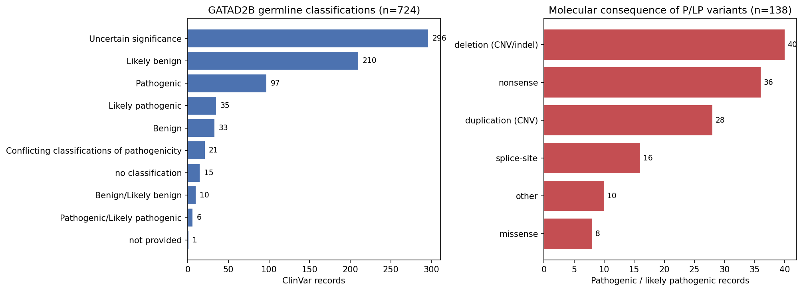
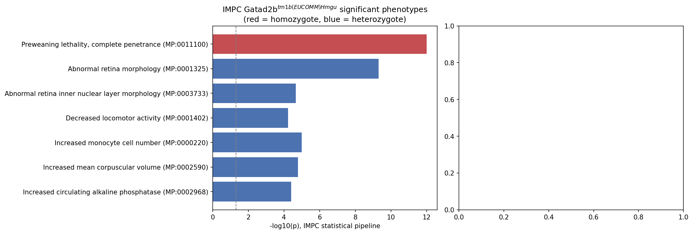
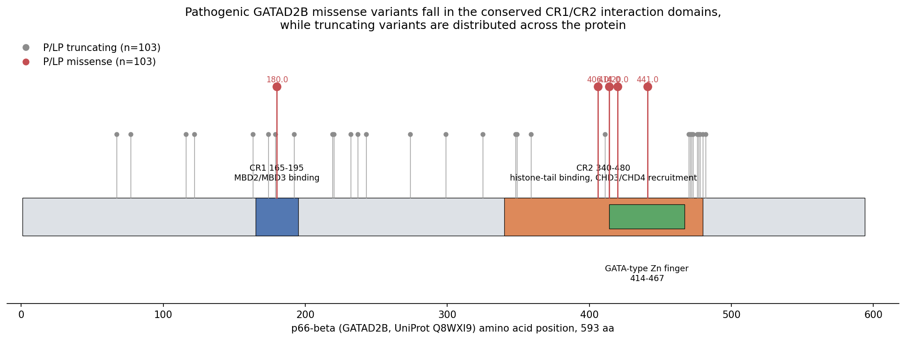
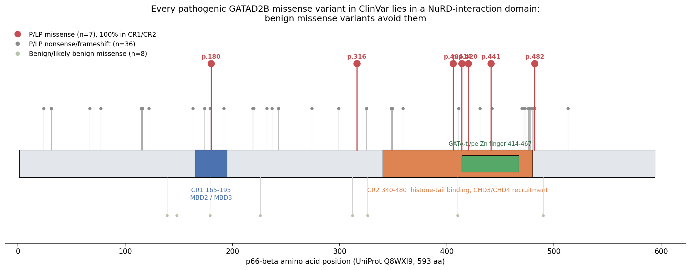
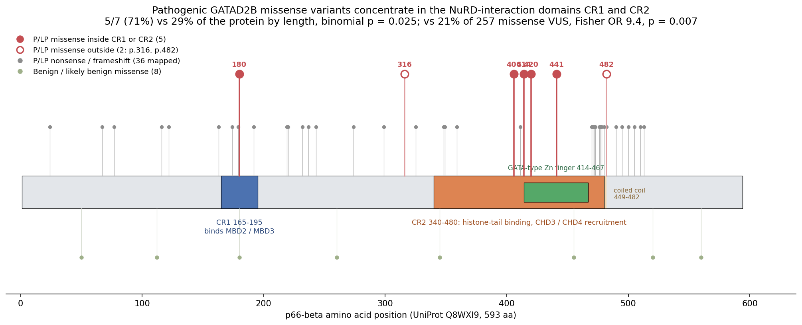
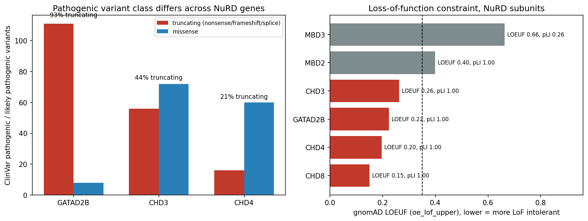
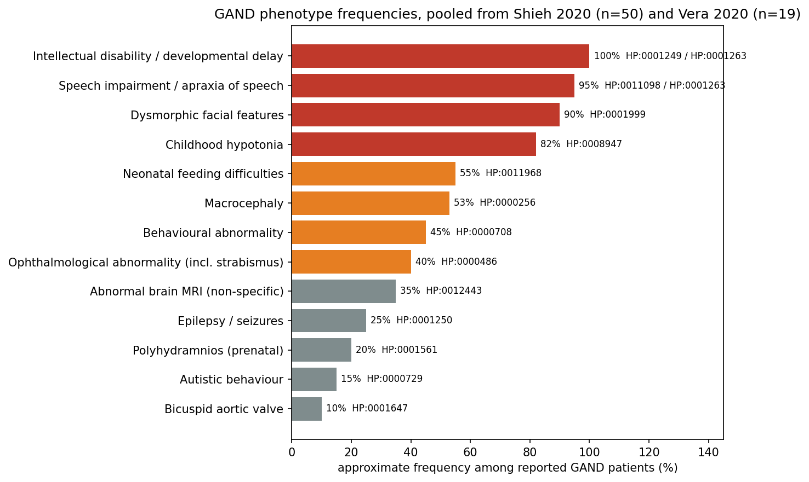

An autosomal dominant neurodevelopmental disorder caused by de novo heterozygous loss-of-function variants in GATAD2B, which encodes p66-beta, a subunit of the nucleosome remodeling and deacetylase (NuRD) complex. It presents with infantile hypotonia, global developmental delay, moderate to severe intellectual disability, a speech impairment disproportionate to the cognitive delay, macrocephaly in about half of patients, and a recognisable facial gestalt of broad forehead, deeply set eyes, hypertelorism, wide nasal base and pointed chin. The lesion is a failure of bridging rather than of catalysis. p66-beta holds two conserved regions: CR1 contacts MBD2 and MBD3, and CR2 is the surface the CHD3 and CHD4 ATPase subunits need in order to join the rest of NuRD. Both allele classes converge on that failure from opposite directions. Truncating variants, which are the large majority, leave roughly half-normal protein; the missense variants, which cluster in CR1 and CR2, leave full-length protein at normal abundance that cannot bind its NuRD partners. The consequence is a complex that assembles its deacetylase core but is uncoupled from the remodelling module it is supposed to recruit. What that costs is read out in the developing cortex. Single-cell transcriptomics of embryonic cortex in Gatad2b mutant mice shows misexpression of corticogenesis regulators including Bcl11b, Nfia, H3f3b and Sox5, with abnormal cortical patterning and altered cellular proportions; neuronal knockdown of the Drosophila orthologue simj gives impaired learning and altered synapse morphology. Haploinsufficient mice show behavioural abnormalities resembling the human disorder while homozygous mutants die perinatally, which is the model-organism counterpart of a disease that exists only in the heterozygous state. GAND belongs with CHD3-related Snijders Blok-Campeau syndrome and CHD4-related Sifrim-Hitz-Weiss syndrome in the NuRD-associated class of macrocephaly neurodevelopmental disorders, and the three overlap closely enough that molecular testing rather than examination separates them.
Ask a research question about GATAD2B-Associated Neurodevelopmental Disorder. OpenScientist will conduct autonomous deep research using the Disorder Mechanisms Knowledge Base and PubMed literature (typically 10-30 minutes).
Do not include personal health information in your question. Questions and results are cached in your browser's local storage.
Conditions with similar clinical presentations that must be differentiated from GATAD2B-Associated Neurodevelopmental Disorder:
name: GATAD2B-Associated Neurodevelopmental Disorder
creation_date: "2026-11-19T03:30:00Z"
category: Mendelian
synonyms:
- GAND
- GAND syndrome
- MRD18
- IDD18
- autosomal dominant intellectual disability 18
- intellectual disability, autosomal dominant type 18
- severe intellectual disability-poor language-strabismus-grimacing face-long fingers syndrome
description: >-
An autosomal dominant neurodevelopmental disorder caused by de novo
heterozygous loss-of-function variants in GATAD2B, which encodes p66-beta, a
subunit of the nucleosome remodeling and deacetylase (NuRD) complex. It
presents with infantile hypotonia, global developmental delay, moderate to
severe intellectual disability, a speech impairment disproportionate to the
cognitive delay, macrocephaly in about half of patients, and a recognisable
facial gestalt of broad forehead, deeply set eyes, hypertelorism, wide nasal
base and pointed chin.
The lesion is a failure of bridging rather than of catalysis. p66-beta holds
two conserved regions: CR1 contacts MBD2 and MBD3, and CR2 is the surface the
CHD3 and CHD4 ATPase subunits need in order to join the rest of NuRD. Both
allele classes converge on that failure from opposite directions. Truncating
variants, which are the large majority, leave roughly half-normal protein;
the missense variants, which cluster in CR1 and CR2, leave full-length
protein at normal abundance that cannot bind its NuRD partners. The
consequence is a complex that assembles its deacetylase core but is
uncoupled from the remodelling module it is supposed to recruit.
What that costs is read out in the developing cortex. Single-cell
transcriptomics of embryonic cortex in Gatad2b mutant mice shows
misexpression of corticogenesis regulators including Bcl11b, Nfia, H3f3b and
Sox5, with abnormal cortical patterning and altered cellular proportions;
neuronal knockdown of the Drosophila orthologue simj gives impaired learning
and altered synapse morphology. Haploinsufficient mice show behavioural
abnormalities resembling the human disorder while homozygous mutants die
perinatally, which is the model-organism counterpart of a disease that
exists only in the heterozygous state.
GAND belongs with CHD3-related Snijders Blok-Campeau syndrome and
CHD4-related Sifrim-Hitz-Weiss syndrome in the NuRD-associated class of
macrocephaly neurodevelopmental disorders, and the three overlap closely
enough that molecular testing rather than examination separates them.
disease_term:
preferred_term: GATAD2B-associated neurodevelopmental disorder
term:
id: MONDO:0014034
label: severe intellectual disability-poor language-strabismus-grimacing face-long fingers syndrome
parents:
- Mendelian Neurodevelopmental Disorder
- NuRD-Associated Neurodevelopmental Disorder
notes: >-
Entry name. The MONDO label is a string of clinical features rather than a
name the field uses. GAND, which MONDO carries as an exact synonym and which
ClinGen's own curation gives as an alternative name for the disorder, is the
established name, so the entry takes the GATAD2B-associated form and keeps
the MONDO label and the MRD18 serial designations in synonyms.
Phenotype frequencies come from the cohort papers, not from the HPO
annotation. The HPO annotation of OMIM:615074 derives entirely from the
original four-patient 2013 report, so every frequency-bearing term there
reads 4/4, and the two features that most distinguish this disorder are
missing from it altogether: macrocephaly, which the 50-patient cohort puts at
91.8% by assessment and 60.4% at birth, and seizure at 24%. Those 4/4 figures
are an artifact of a stale annotation and are not imported. The frequencies
in this entry are quoted from Table 1 of the 50-patient cohort and from the
19-patient cohort, with the table row itself as the snippet.
Two features carry no frequency because the cohorts did not score them:
sparse hair, from the original four-patient report, and deeply set eyes, from
the 19-patient cohort's description of the gestalt.
Long fingers is not curated as a phenotype, although it appears in the MONDO
label for this term and in the OMIM title it derives from. No cached source
for this entry supports it: the string "long finger", "long toe",
"arachnodactyly" and "digit" appear in none of PMID:23644463, PMID:31949314,
PMID:32688057, PMID:28077840, PMID:38238293 or PMID:39976362, and the 2013
founding report is cached as abstract only, so if its tables score the feature
they are not reachable from here. The 50-patient and 19-patient cohorts both
scored dysmorphology in detail and neither lists it. It is left out rather
than bound to a label-derived claim with no quotable support; a curator with
the 2013 full text can add it.
No GeneReviews chapter covers this disorder or GATAD2B.
GATAD2B is also a `genetic:` row inside the broad
Autosomal_Dominant_Non-Syndromic_Intellectual_Disability entry. That is not a
duplicate of this one: GAND is syndromic, with macrocephaly and a recognisable
facial gestalt, and that entry covers non-syndromic intellectual disability
across many genes.
The deep-research report proposed two further pathway branches that are not
curated here: MTA3 relocation activating Wnt, demonstrated only in a
non-neuronal stem cell under near-complete knockdown, and Sufu-mediated
recruitment of p66-beta to Gli targets, whose relevance to this disorder is
untested. Its NCIT:C38120 binding for anticonvulsant agent names an unrelated
tumour-infiltrating-lymphocyte concept; every term here was re-derived from
OLS.
inheritance:
- name: Autosomal dominant
inheritance_term:
preferred_term: Autosomal dominant inheritance
term:
id: HP:0000006
label: Autosomal dominant inheritance
de_novo_rate: Most reported variants are de novo
description: >-
96% of variants arise de novo. Two subjects in the 50-patient cohort
inherited their variant through parental mosaicism, so recurrence risk in a
family with an apparently de novo variant is low but not zero.
evidence:
- reference: PMID:23644463
reference_title: "GATAD2B loss-of-function mutations cause a recognisable syndrome with intellectual disability and are associated with learning deficits and synaptic undergrowth in Drosophila."
supports: SUPPORT
evidence_source: HUMAN_CLINICAL
quote_role: PRIMARY_RESULT
snippet: "We hereby define a novel clinically recognisable intellectual disability syndrome caused by loss-of-function of GATAD2B."
explanation: The founding description of the disorder as a dominant loss-of-function syndrome.
- reference: PMID:31949314
reference_title: "GATAD2B-associated neurodevelopmental disorder (GAND): clinical and molecular insights into a NuRD-related disorder."
supports: SUPPORT
evidence_source: HUMAN_CLINICAL
quote_role: PRIMARY_RESULT
snippet: "Almost all subjects (96%) had de novo pathogenic variants, with two subjects inheriting variants via parental mosaicism."
explanation: The de novo rate and the parental mosaicism this description reports.
genetic:
- name: GATAD2B
variant_origin: GERMLINE
gene_term:
preferred_term: GATAD2B
term:
id: hgnc:30778
label: GATAD2B
relationship_type: CAUSATIVE
notes: >-
Two allele classes, both loss of function. Truncating variants - nonsense,
frameshift, splice-site and intragenic or focal 1q21.3 deletions - are the
large majority. Missense variants are a minority and are restricted to the
CR1 and CR2 conserved regions, where they leave the protein intact but
unable to bind its NuRD partners. That restriction is what makes a GATAD2B
missense variant outside CR1/CR2 hard to call. In the 50-patient cohort the
classes break down as nonsense 34%, truncating frameshift 32%, splice-site
14%, deletions 6% and missense 14%.
gene_disease_validity:
- validity_classification: DEFINITIVE
classified_by: CLINGEN
external_id: CGGV:assertion_5fb40641-ec79-4fee-9111-d38d2062c15b-2022-03-18T040000.000Z
evidence:
- reference: CGGV:assertion_5fb40641-ec79-4fee-9111-d38d2062c15b-2022-03-18T040000.000Z
reference_title: "GATAD2B / severe intellectual disability-poor language-strabismus-grimacing face-long fingers syndrome (Definitive)"
supports: SUPPORT
evidence_source: OTHER
snippet: "GATAD2B | HGNC:30778 | severe intellectual disability-poor language-strabismus-grimacing face-long fingers syndrome | MONDO:0014034 | AD | Definitive"
explanation: ClinGen Intellectual Disability and Autism GCEP classification for this MONDO entity.
evidence:
- reference: CGGV:assertion_5fb40641-ec79-4fee-9111-d38d2062c15b-2022-03-18T040000.000Z
reference_title: "GATAD2B / severe intellectual disability-poor language-strabismus-grimacing face-long fingers syndrome (Definitive)"
supports: SUPPORT
evidence_source: OTHER
snippet: "The mechanism of disease is known to be haploinsufficiency/loss of function."
explanation: ClinGen's statement of the disease mechanism, which is what the pathophysiology chain here is built on.
- reference: CGGV:assertion_5fb40641-ec79-4fee-9111-d38d2062c15b-2022-03-18T040000.000Z
reference_title: "GATAD2B / severe intellectual disability-poor language-strabismus-grimacing face-long fingers syndrome (Definitive)"
supports: SUPPORT
evidence_source: OTHER
snippet: "This disorder, which is also referred to as GAND syndrome, or GATAD2B-associated neurodevelopmental syndrome"
explanation: The source for the entry's name, recorded because the MONDO label is a feature string rather than a name in use.
- reference: PMID:31949314
reference_title: "GATAD2B-associated neurodevelopmental disorder (GAND): clinical and molecular insights into a NuRD-related disorder."
supports: SUPPORT
evidence_source: HUMAN_CLINICAL
quote_role: PRIMARY_RESULT
snippet: "A consistent GAND phenotype was caused by a range of genetic variants in GATAD2B that include loss-of-function and missense subtypes."
explanation: Establishes that both allele classes produce one clinical entity, which is why this is a single entry.
- reference: PMID:31949314
reference_title: "GATAD2B-associated neurodevelopmental disorder (GAND): clinical and molecular insights into a NuRD-related disorder."
supports: SUPPORT
evidence_source: HUMAN_CLINICAL
quote_role: PRIMARY_RESULT
snippet: "Multiple types of variants were identified in our subjects that included: nonsense (17; 34%), truncating frameshift (16; 32%), splice-site (7; 14%), deletions (3; 6%), and missense (7; 14%) changes"
explanation: The variant-class breakdown this row's notes reports.
- reference: PMID:31949314
reference_title: "GATAD2B-associated neurodevelopmental disorder (GAND): clinical and molecular insights into a NuRD-related disorder."
supports: SUPPORT
evidence_source: HUMAN_CLINICAL
quote_role: PRIMARY_RESULT
snippet: "the frequency of epilepsy in subjects with missense variants (57%), compared to the total (24%)"
explanation: >-
The only variant-class phenotype difference the cohort found: epilepsy is
enriched among missense carriers.
pathophysiology:
- name: De Novo Heterozygous GATAD2B Lesion
biological_scale: MOLECULAR
description: >-
A truncating variant, a focal 1q21.3 deletion, or a missense variant inside
the CR1 or CR2 conserved region, on one allele. The disorder exists only in
the heterozygous state: homozygous mutant mice die perinatally.
genetic_context:
variant_origin: GERMLINE
functional_impact_category: LOSS_OF_FUNCTION
genes:
- preferred_term: GATAD2B
term:
id: hgnc:30778
label: GATAD2B
evidence:
- reference: PMID:23644463
reference_title: "GATAD2B loss-of-function mutations cause a recognisable syndrome with intellectual disability and are associated with learning deficits and synaptic undergrowth in Drosophila."
supports: SUPPORT
evidence_source: HUMAN_CLINICAL
quote_role: PRIMARY_RESULT
snippet: "GATA zinc finger domain containing 2B (GATAD2B) encodes a subunit of the MeCP1-Mi-2/nucleosome remodelling and deacetylase complex involved in chromatin modification and regulation of transcription."
explanation: Identifies the gene product and the complex the lesion acts through.
downstream:
- target: Reduced p66-beta Abundance
causal_link_type: DIRECT
description: The truncating and deletion alleles, which are the large majority.
evidence:
- reference: PMID:28077840
reference_title: "Novel GATAD2B loss-of-function mutations cause intellectual disability in two unrelated cases."
supports: SUPPORT
evidence_source: IN_VITRO
quote_role: PRIMARY_RESULT
snippet: "a reduction in the target protein compared with normal controls"
explanation: Western blot in patients with frameshift alleles, measuring the reduced protein this edge asserts.
- target: p66-beta That Cannot Bind Its NuRD Partners
causal_link_type: DIRECT
description: The CR1/CR2 missense alleles, which leave abundance intact.
evidence:
- reference: PMID:31949314
reference_title: "GATAD2B-associated neurodevelopmental disorder (GAND): clinical and molecular insights into a NuRD-related disorder."
supports: SUPPORT
evidence_source: IN_VITRO
quote_role: PRIMARY_RESULT
snippet: "Immunoprecipitation assays revealed several of these missense variants disrupted GATAD2B interactions with its NuRD complex binding partners."
explanation: The measured binding failure that defines the missense branch.
- name: Reduced p66-beta Abundance
biological_scale: MOLECULAR
description: >-
Nonsense-mediated decay or a truncated product leaves roughly half-normal
p66-beta. This is a dosage lesion: there is nothing wrong with the protein
that remains, there is simply not enough of it.
evidence:
- reference: PMID:28077840
reference_title: "Novel GATAD2B loss-of-function mutations cause intellectual disability in two unrelated cases."
supports: SUPPORT
evidence_source: IN_VITRO
quote_role: PRIMARY_RESULT
snippet: "a reduction in the target protein compared with normal controls"
explanation: The reduced abundance measured in patient material.
downstream:
- target: Failure of NuRD Bridging by p66-beta
causal_link_type: DIRECT
- name: p66-beta That Cannot Bind Its NuRD Partners
biological_scale: MOLECULAR
description: >-
Missense variants restricted to CR1 and CR2 leave full-length protein at
normal abundance that has lost the interaction surfaces. The two branches
reach the same place from opposite directions, which is why one clinical
syndrome results from two allele classes.
evidence:
- reference: PMID:31949314
reference_title: "GATAD2B-associated neurodevelopmental disorder (GAND): clinical and molecular insights into a NuRD-related disorder."
supports: SUPPORT
evidence_source: HUMAN_CLINICAL
quote_role: PRIMARY_RESULT
snippet: "Seven subjects were identified with missense variants that localized within two conserved region domains (CR1 or CR2) of the GATAD2B protein."
explanation: The restriction of pathogenic missense variants to the two interaction domains.
downstream:
- target: Failure of NuRD Bridging by p66-beta
causal_link_type: DIRECT
- name: Failure of NuRD Bridging by p66-beta
biological_scale: MOLECULAR
description: >-
p66-beta is the bridge inside NuRD: CR1 contacts MBD2 and MBD3, and CR2 is
the surface CHD3 and CHD4 require in order to join the rest of the complex.
Correct subnuclear distribution of p66 depends on that MBD2 contact, which
suggests a CR1 variant would mislocalise the protein even with CR2 intact;
that step is an inference from the MBD2 dependence rather than a measured
result for any patient variant.
genes:
- preferred_term: GATAD2B
term:
id: hgnc:30778
label: GATAD2B
molecular_functions:
- preferred_term: p66-beta binding to its NuRD partner subunits
modifier: DECREASED
term:
id: GO:0044877
label: protein-containing complex binding
- preferred_term: p66-beta histone tail binding
modifier: DECREASED
term:
id: GO:0042393
label: histone binding
evidence:
- reference: PMID:31737996
reference_title: "The NuRD complex and macrocephaly associated neurodevelopmental disorders."
supports: SUPPORT
evidence_source: COMPUTATIONAL
quote_role: REVIEW_SYNTHESIS
snippet: "Structural models of NuRD indicate that CHD3 and CHD4 require direct contact with the GATAD2B-CR2 domain to interact with the rest of the complex"
explanation: The structural basis for treating CR2 as the recruitment surface for the remodelling module.
- reference: PMID:16415179
reference_title: "p66alpha and p66beta of the Mi-2/NuRD complex mediate MBD2 and histone interaction."
supports: SUPPORT
evidence_source: IN_VITRO
quote_role: PRIMARY_RESULT
snippet: "wild-type subnuclear distribution of p66alpha and p66beta depends on the presence of MBD2"
explanation: The MBD2 dependence that makes the CR1 contact load-bearing for localisation as well as assembly.
downstream:
- target: Catalytic Uncoupling of the NuRD Remodelling Module
causal_link_type: DIRECT
- name: Catalytic Uncoupling of the NuRD Remodelling Module
biological_scale: MOLECULAR
description: >-
NuRD still assembles its MTA-HDAC1/2-RBBP4/7 deacetylase core, but that
core is no longer coupled to the ATP-dependent CHD3/CHD4 remodelling
activity it is supposed to act with. The complex is present and
functionally incomplete rather than absent. This step follows from the
structure and the co-immunoprecipitation results and has not been measured
directly in patient neurons.
biological_processes:
- preferred_term: chromatin remodeling
modifier: DECREASED
term:
id: GO:0006338
label: chromatin remodeling
evidence:
- reference: PMID:31737996
reference_title: "The NuRD complex and macrocephaly associated neurodevelopmental disorders."
supports: SUPPORT
evidence_source: COMPUTATIONAL
directness: INDIRECT
quote_role: REVIEW_SYNTHESIS
snippet: "Structural models of NuRD indicate that CHD3 and CHD4 require direct contact with the GATAD2B-CR2 domain to interact with the rest of the complex"
explanation: >-
The requirement is demonstrated structurally; that the resulting complex
is assembled-but-uncoupled in patient neurons is inferred from it.
downstream:
- target: Craniofacial and Ocular Developmental Patterning Defect
causal_link_type: INDIRECT_UNKNOWN_INTERMEDIATES
- target: Cardiac Outflow Tract Patterning Defect
causal_link_type: INDIRECT_UNKNOWN_INTERMEDIATES
- target: Misexpression of Corticogenesis Regulators
causal_link_type: INDIRECT_KNOWN_INTERMEDIATES
evidence:
- reference: PMID:38238293
reference_title: "Gatad2b, associated with the neurodevelopmental syndrome GAND, plays a critical role in neurodevelopment and cortical patterning."
supports: SUPPORT
evidence_source: MODEL_ORGANISM
quote_role: PRIMARY_RESULT
snippet: "indicated misexpression of genes key for corticogenesis and associated with neurodevelopmental syndromes such as Bcl11b, Nfia and H3f3b and Sox5"
explanation: >-
The transcriptional consequence measured in Gatad2b mutant embryonic
cortex; the intervening loss of promoter damping is not itself measured.
- name: Misexpression of Corticogenesis Regulators
biological_scale: CELLULAR
description: >-
Single-cell transcriptomics of embryonic cortex in Gatad2b mutant mice
identifies misexpression of Bcl11b, Nfia, H3f3b and Sox5, all regulators of
cortical identity and all themselves associated with neurodevelopmental
syndromes.
The binding here reads the lesion as loss of repression, since NuRD's role
at these promoters is to damp transcription. Misexpression in the source
goes in both directions, so that reading is a simplification of what was
measured. The cell-type binding is likewise a generalisation: the
sequencing was of whole embryonic cortex, which contains progenitors as
well as neurons, so "neuron" is the broadest honest label rather than a
demonstrated cell of action.
biological_processes:
- preferred_term: loss of NuRD-mediated transcriptional damping
modifier: DECREASED
term:
id: GO:0000122
label: negative regulation of transcription by RNA polymerase II
cell_types:
- preferred_term: cortical neuron
term:
id: CL:0000540
label: neuron
evidence:
- reference: PMID:38238293
reference_title: "Gatad2b, associated with the neurodevelopmental syndrome GAND, plays a critical role in neurodevelopment and cortical patterning."
supports: SUPPORT
evidence_source: MODEL_ORGANISM
quote_role: PRIMARY_RESULT
snippet: "indicated misexpression of genes key for corticogenesis and associated with neurodevelopmental syndromes such as Bcl11b, Nfia and H3f3b and Sox5"
explanation: The named misexpressed regulators, measured by single-cell RNA sequencing.
downstream:
- target: Abnormal Cortical Patterning
causal_link_type: DIRECT
- name: Abnormal Cortical Patterning
biological_scale: TISSUE
description: >-
Altered cortical patterning with altered cellular proportions and
cell-specific changes in the developmental transcriptome, measured in the
same mutant mice.
biological_processes:
- preferred_term: cerebral cortex development
modifier: DECREASED
term:
id: GO:0021987
label: cerebral cortex development
evidence:
- reference: PMID:38238293
reference_title: "Gatad2b, associated with the neurodevelopmental syndrome GAND, plays a critical role in neurodevelopment and cortical patterning."
supports: SUPPORT
evidence_source: MODEL_ORGANISM
quote_role: PRIMARY_RESULT
snippet: "We also observed abnormal cortical patterning, and cellular proportions and cell-specific alterations in the developmental transcriptome in these mice"
explanation: The tissue-level consequence measured in the mouse.
downstream:
- target: Synaptic Undergrowth and Altered Synapse Morphology
causal_link_type: DIRECT
- target: Seizure
causal_link_type: INDIRECT_UNKNOWN_INTERMEDIATES
- target: Ventriculomegaly
causal_link_type: INDIRECT_UNKNOWN_INTERMEDIATES
- target: Abnormal cerebral white matter morphology
causal_link_type: INDIRECT_UNKNOWN_INTERMEDIATES
- target: Broad-based gait
causal_link_type: INDIRECT_UNKNOWN_INTERMEDIATES
- target: Infantile Hypotonia
causal_link_type: INDIRECT_UNKNOWN_INTERMEDIATES
- target: Macrocephaly Development
causal_link_type: INDIRECT_UNKNOWN_INTERMEDIATES
- name: Synaptic Undergrowth and Altered Synapse Morphology
biological_scale: CELLULAR
description: >-
Neuronal knockdown of the Drosophila GATAD2B orthologue simj produces
altered synapse morphology, with synaptic undergrowth, and does so from
within the neuron, which places the requirement for this gene in neurons
themselves rather than in surrounding tissue.
biological_processes:
- preferred_term: positive regulation of synapse assembly
modifier: DECREASED
term:
id: GO:0051965
label: positive regulation of synapse assembly
cell_types:
- preferred_term: neuron
term:
id: CL:0000540
label: neuron
evidence:
- reference: PMID:23644463
reference_title: "GATAD2B loss-of-function mutations cause a recognisable syndrome with intellectual disability and are associated with learning deficits and synaptic undergrowth in Drosophila."
supports: SUPPORT
evidence_source: MODEL_ORGANISM
quote_role: PRIMARY_RESULT
snippet: "Neuronal knockdown of Drosophila GATAD2B orthologue, simj, resulted in impaired learning and altered synapse morphology."
explanation: The synaptic phenotype and its neuronal autonomy, measured in the fly.
downstream:
- target: Impaired Learning and Behavioural Abnormality
causal_link_type: DIRECT
- name: Impaired Learning and Behavioural Abnormality
biological_scale: ORGANISM
description: >-
The organism-level output, demonstrated in two species. Haploinsufficient
Gatad2b mice show behavioural abnormalities resembling the human disorder,
and neuronal simj knockdown in the fly impairs learning. In the human this
is the intellectual disability and the disproportionate speech impairment.
evidence:
- reference: PMID:38238293
reference_title: "Gatad2b, associated with the neurodevelopmental syndrome GAND, plays a critical role in neurodevelopment and cortical patterning."
supports: SUPPORT
evidence_source: MODEL_ORGANISM
quote_role: PRIMARY_RESULT
snippet: "Homozygous Gatad2b mutants die perinatally, while haploinsufficient Gatad2b mice exhibit behavioral abnormalities resembling the clinical features of GAND patients"
explanation: >-
The heterozygous mouse reproduces the behavioural phenotype, and the
homozygous lethality marks the dosage boundary of the disorder.
downstream:
- target: Severe intellectual disability
causal_link_type: DIRECT
- target: Global developmental delay
causal_link_type: DIRECT
- target: Speech apraxia
causal_link_type: DIRECT
- target: Delayed speech and language development
causal_link_type: DIRECT
- name: Macrocephaly Development
biological_scale: ORGANISM
description: >-
Macrocephaly is the most discriminating physical sign and the feature that
places this disorder with the other NuRD-associated neurodevelopmental
syndromes. It is partly postnatal: present at birth in 60.4% and by
assessment in 91.8%. Its mechanism is not established, and the edge into
this node from the cortical patterning defect is marked
INDIRECT_UNKNOWN_INTERMEDIATES for that reason; it is recorded as a node
because it is the shared feature of the NuRD class, not because a pathway
to it has been demonstrated.
evidence:
- reference: PMID:31949314
reference_title: "GATAD2B-associated neurodevelopmental disorder (GAND): clinical and molecular insights into a NuRD-related disorder."
supports: SUPPORT
evidence_source: HUMAN_CLINICAL
quote_role: PRIMARY_RESULT
snippet: "GAND's clinical phenotype had substantial clinical overlap with other disorders associated with the NuRD complex that involve CHD3 and CHD4, with clinical features of hypotonia, intellectual disability, cardiac defects, childhood apraxia of speech, and macrocephaly."
explanation: Macrocephaly as the shared NuRD-class feature.
downstream:
- target: Macrocephaly
causal_link_type: DIRECT
- name: Craniofacial and Ocular Developmental Patterning Defect
biological_scale: TISSUE
description: >-
The same NuRD lesion acting during craniofacial development produces a
recognisable facial gestalt - broad forehead, deeply set eyes,
hypertelorism, wide nasal base, short philtrum and pointed chin - together
with strabismus. That this arises from the chromatin lesion rather than
from a separate cause is an inference from the gestalt's consistency across
cohorts and from its overlap with the CHD3 and CHD4 NuRDopathies, which
share facial features; no craniofacial mechanism has been demonstrated for
this gene, and the Gatad2b mouse work reported cortex rather than face.
evidence:
- reference: PMID:23644463
reference_title: "GATAD2B loss-of-function mutations cause a recognisable syndrome with intellectual disability and are associated with learning deficits and synaptic undergrowth in Drosophila."
supports: SUPPORT
evidence_source: HUMAN_CLINICAL
directness: INDIRECT
quote_role: PRIMARY_RESULT
snippet: "We hereby define a novel clinically recognisable intellectual disability syndrome caused by loss-of-function of GATAD2B."
explanation: >-
The syndrome is clinically recognisable, which is a statement about the
facial gestalt being consistent and gene-determined. The developmental
route from the chromatin lesion to the face is not demonstrated.
downstream:
- target: Broad forehead
causal_link_type: INDIRECT_UNKNOWN_INTERMEDIATES
- target: Deeply set eye
causal_link_type: INDIRECT_UNKNOWN_INTERMEDIATES
- target: Hypertelorism
causal_link_type: INDIRECT_UNKNOWN_INTERMEDIATES
- target: Pointed chin
causal_link_type: INDIRECT_UNKNOWN_INTERMEDIATES
- target: Short philtrum
causal_link_type: INDIRECT_UNKNOWN_INTERMEDIATES
- target: Wide nasal bridge
causal_link_type: INDIRECT_UNKNOWN_INTERMEDIATES
- target: Epicanthus
causal_link_type: INDIRECT_UNKNOWN_INTERMEDIATES
- target: Micrognathia
causal_link_type: INDIRECT_UNKNOWN_INTERMEDIATES
- target: Broad nasal tip
causal_link_type: INDIRECT_UNKNOWN_INTERMEDIATES
- target: Prominent supraorbital ridges
causal_link_type: INDIRECT_UNKNOWN_INTERMEDIATES
- target: Posteriorly rotated ears
causal_link_type: INDIRECT_UNKNOWN_INTERMEDIATES
- target: Downslanted palpebral fissures
causal_link_type: INDIRECT_UNKNOWN_INTERMEDIATES
- target: Sparse hair
causal_link_type: INDIRECT_UNKNOWN_INTERMEDIATES
- target: Strabismus
causal_link_type: INDIRECT_UNKNOWN_INTERMEDIATES
- target: Astigmatism
causal_link_type: INDIRECT_UNKNOWN_INTERMEDIATES
- target: Hypermetropia
causal_link_type: INDIRECT_UNKNOWN_INTERMEDIATES
- target: Myopia
causal_link_type: INDIRECT_UNKNOWN_INTERMEDIATES
- target: Anisocoria
causal_link_type: INDIRECT_UNKNOWN_INTERMEDIATES
- name: Cardiac Outflow Tract Patterning Defect
biological_scale: TISSUE
description: >-
Bicuspid aortic valve occurs in 10% of patients against roughly 2% in the
general population, and 4% of the cohort required cardiac intervention.
Cardiac defects are one of the features GAND shares with the CHD4-related
NuRDopathy, which is the basis for treating this as a consequence of the
same chromatin lesion rather than a coincidence. No cardiac developmental
mechanism has been demonstrated for this gene, so the edge in is marked
INDIRECT_UNKNOWN_INTERMEDIATES.
evidence:
- reference: PMID:31949314
reference_title: "GATAD2B-associated neurodevelopmental disorder (GAND): clinical and molecular insights into a NuRD-related disorder."
supports: SUPPORT
evidence_source: HUMAN_CLINICAL
directness: INDIRECT
quote_role: PRIMARY_RESULT
snippet: "GAND's clinical phenotype had substantial clinical overlap with other disorders associated with the NuRD complex that involve CHD3 and CHD4, with clinical features of hypotonia, intellectual disability, cardiac defects, childhood apraxia of speech, and macrocephaly."
explanation: >-
Cardiac defects named as a shared NuRD-class feature. The developmental
route from the chromatin lesion to the valve is not demonstrated.
downstream:
- target: Bicuspid aortic valve
causal_link_type: INDIRECT_UNKNOWN_INTERMEDIATES
- name: Infantile Hypotonia
biological_scale: ORGANISM
description: >-
Central hypotonia from birth or early infancy, universal in the 50-patient
cohort and improving with age. It is usually what brings the child to
attention, before the developmental delay is apparent, and it carries the
oromotor consequences with it: neonatal feeding difficulty in 82%,
persistent drooling, and plausibly the maternal polyhydramnios that
precedes them. How the chromatin lesion produces hypotonia is not
established, so the edge into this node is marked
INDIRECT_UNKNOWN_INTERMEDIATES.
evidence:
- reference: PMID:23644463
reference_title: "GATAD2B loss-of-function mutations cause a recognisable syndrome with intellectual disability and are associated with learning deficits and synaptic undergrowth in Drosophila."
supports: SUPPORT
evidence_source: HUMAN_CLINICAL
quote_role: PRIMARY_RESULT
snippet: "Detailed clinical description showed that all four individuals with a GATAD2B aberration had a distinctive phenotype with childhood hypotonia, severe intellectual disability, limited speech, tubular shaped nose with broad nasal tip, short philtrum, sparse hair and strabismus."
explanation: Hypotonia in all four of the original patients.
downstream:
- target: Floppy infant
causal_link_type: DIRECT
- target: Feeding difficulties
causal_link_type: DIRECT
- target: Drooling
causal_link_type: DIRECT
- target: Polyhydramnios
causal_link_type: INDIRECT_UNKNOWN_INTERMEDIATES
phenotypes:
- category: Neurologic
name: Global developmental delay
description: >-
Developmental delay or intellectual disability is universal: 50 of 50 in the largest cohort.
Median age of independent walking is 2.5 years and of first spoken words 3 years.
phenotype_term:
preferred_term: Global developmental delay
term:
id: HP:0001263
label: Global developmental delay
frequency: VERY_FREQUENT
evidence:
- reference: PMID:31949314
reference_title: "GATAD2B-associated neurodevelopmental disorder (GAND): clinical and molecular insights into a NuRD-related disorder."
supports: SUPPORT
evidence_source: HUMAN_CLINICAL
quote_role: PRIMARY_RESULT
snippet: "| Intellectual Disability/DD | 50/50 (100) |"
explanation: Universal in the 50-patient cohort.
- reference: PMID:32688057
reference_title: "Clinical and molecular description of 19 patients with GATAD2B-Associated Neurodevelopmental Disorder (GAND)."
supports: SUPPORT
evidence_source: HUMAN_CLINICAL
quote_role: PRIMARY_RESULT
snippet: "All individuals presented developmental delay with a median age of 2.5 years for independent walking and of 3 years for first spoken words."
explanation: The developmental milestones from the 19-patient cohort.
- category: Neurologic
name: Severe intellectual disability
description: >-
Intellectual disability in every reported patient, mostly moderate to severe. The
19-patient cohort found one profound and one mild case, widening the severity
spectrum beyond the uniformly severe picture of the original report.
phenotype_term:
preferred_term: Moderate to severe intellectual disability
term:
id: HP:0010864
label: Severe intellectual disability
frequency: VERY_FREQUENT
evidence:
- reference: PMID:31949314
reference_title: "GATAD2B-associated neurodevelopmental disorder (GAND): clinical and molecular insights into a NuRD-related disorder."
supports: SUPPORT
evidence_source: HUMAN_CLINICAL
quote_role: PRIMARY_RESULT
snippet: "| Intellectual Disability/DD | 50/50 (100) |"
explanation: Universal in the 50-patient cohort.
- reference: PMID:32688057
reference_title: "Clinical and molecular description of 19 patients with GATAD2B-Associated Neurodevelopmental Disorder (GAND)."
supports: SUPPORT
evidence_source: HUMAN_CLINICAL
quote_role: PRIMARY_RESULT
snippet: "ID was mostly moderate to severe, with one profound and one mild case, which shows a wider spectrum of disease severity than previously reported."
explanation: The severity distribution, including the range the earlier series missed.
- category: Neurologic
name: Delayed speech and language development
description: >-
Speech impairment out of proportion to the cognitive delay, and the feature
families report as most limiting. Progress plateaus after the first words: 20%
of those over four years old remained non-verbal in the 50-patient cohort, and
two patients over 30 years of age were non-verbal in the 19-patient cohort.
phenotype_term:
preferred_term: Delayed speech and language development
term:
id: HP:0000750
label: Delayed speech and language development
frequency: VERY_FREQUENT
evidence:
- reference: PMID:32688057
reference_title: "Clinical and molecular description of 19 patients with GATAD2B-Associated Neurodevelopmental Disorder (GAND)."
supports: SUPPORT
evidence_source: HUMAN_CLINICAL
quote_role: PRIMARY_RESULT
snippet: "GATAD2B variant carriers showed very little subsequent speech progress, two patients over 30 years of age remaining non-verbal."
explanation: The plateau and its persistence into adulthood.
- category: Neurologic
name: Speech apraxia
description: >-
Childhood apraxia of speech, a motor-planning impairment of speech production,
and one of the features GAND shares with the other NuRD-associated disorders.
phenotype_term:
preferred_term: Childhood apraxia of speech
term:
id: HP:0011098
label: Speech apraxia
evidence:
- reference: PMID:31949314
reference_title: "GATAD2B-associated neurodevelopmental disorder (GAND): clinical and molecular insights into a NuRD-related disorder."
supports: SUPPORT
evidence_source: HUMAN_CLINICAL
quote_role: PRIMARY_RESULT
snippet: "Subjects had clinical findings that included macrocephaly, hypotonia, intellectual disability, neonatal feeding issues, polyhydramnios, apraxia of speech, epilepsy, and bicuspid aortic valves."
explanation: Apraxia of speech in the 50-patient cohort.
- category: Growth
name: Macrocephaly
description: >-
Large head circumference, and the most discriminating physical sign. It is
present at birth in 60.4% and by the time of assessment in 91.8%, so it is
partly postnatal in onset; the 19-patient cohort reports 53%. Macrocephaly is
absent from this disease's HPO annotation altogether.
phenotype_term:
preferred_term: Macrocephaly
term:
id: HP:0000256
label: Macrocephaly
frequency: VERY_FREQUENT
evidence:
- reference: PMID:31949314
reference_title: "GATAD2B-associated neurodevelopmental disorder (GAND): clinical and molecular insights into a NuRD-related disorder."
supports: SUPPORT
evidence_source: HUMAN_CLINICAL
quote_role: PRIMARY_RESULT
snippet: "| Macrocephaly-Current | 45/49 (91.8) |"
explanation: Macrocephaly at assessment, which is the band this record reports.
- reference: PMID:31949314
reference_title: "GATAD2B-associated neurodevelopmental disorder (GAND): clinical and molecular insights into a NuRD-related disorder."
supports: SUPPORT
evidence_source: HUMAN_CLINICAL
quote_role: PRIMARY_RESULT
snippet: "| Macrocephaly-Birth | 26/43 (60.4) |"
explanation: Macrocephaly already present at birth in the same cohort, which is what makes the onset partly postnatal.
- reference: PMID:32688057
reference_title: "Clinical and molecular description of 19 patients with GATAD2B-Associated Neurodevelopmental Disorder (GAND)."
supports: SUPPORT
evidence_source: HUMAN_CLINICAL
quote_role: PRIMARY_RESULT
snippet: "We confirm macrocephaly as a major feature in GAND (53%)."
explanation: The independent 53% figure from the 19-patient cohort.
- category: Musculoskeletal
name: Floppy infant
description: >-
Infantile hypotonia, universal in the 50-patient cohort and usually what brings
the child to attention, with the neonatal feeding difficulty that accompanies
it, before the developmental delay is apparent.
phenotype_term:
preferred_term: Infantile hypotonia
term:
id: HP:0008947
label: Floppy infant
frequency: VERY_FREQUENT
evidence:
- reference: PMID:31949314
reference_title: "GATAD2B-associated neurodevelopmental disorder (GAND): clinical and molecular insights into a NuRD-related disorder."
supports: SUPPORT
evidence_source: HUMAN_CLINICAL
quote_role: PRIMARY_RESULT
snippet: "| Infantile Hypotonia | 50/50 (100) |"
explanation: Universal in the 50-patient cohort.
- category: Gastrointestinal
name: Feeding difficulties
description: >-
Neonatal feeding issues in 82%. Reflux often resolves with age, but most
children retain oro-mechanical difficulty and excessive drooling, which is the
same oromotor problem the speech apraxia reflects.
phenotype_term:
preferred_term: Neonatal feeding difficulties and gastro-oesophageal reflux
term:
id: HP:0011968
label: Feeding difficulties
frequency: VERY_FREQUENT
evidence:
- reference: PMID:31949314
reference_title: "GATAD2B-associated neurodevelopmental disorder (GAND): clinical and molecular insights into a NuRD-related disorder."
supports: SUPPORT
evidence_source: HUMAN_CLINICAL
quote_role: PRIMARY_RESULT
snippet: "| Neonatal Feeding Issues | 41/50 (82.0) |"
explanation: The neonatal feeding frequency.
- reference: PMID:31949314
reference_title: "GATAD2B-associated neurodevelopmental disorder (GAND): clinical and molecular insights into a NuRD-related disorder."
supports: SUPPORT
evidence_source: HUMAN_CLINICAL
quote_role: PRIMARY_RESULT
snippet: "Reflux disease often resolved with age, but most children had persistent oro-mechanical issues and excessive drooling"
explanation: The persistence of the oromotor problem after the reflux resolves.
- category: Neurologic
name: Drooling
description: >-
Excessive drooling persisting beyond infancy, part of the oromotor dysfunction
that also underlies the feeding difficulty and the speech apraxia.
phenotype_term:
preferred_term: Excessive drooling
term:
id: HP:0002307
label: Drooling
evidence:
- reference: PMID:31949314
reference_title: "GATAD2B-associated neurodevelopmental disorder (GAND): clinical and molecular insights into a NuRD-related disorder."
supports: SUPPORT
evidence_source: HUMAN_CLINICAL
quote_role: PRIMARY_RESULT
snippet: "most children had persistent oro-mechanical issues and excessive drooling"
explanation: Drooling as a persistent feature in most children.
- category: Prenatal
name: Polyhydramnios
description: >-
Maternal polyhydramnios in 42%, the earliest sign of the disorder and plausibly
a consequence of impaired fetal swallowing, given the neonatal feeding
difficulty that follows.
phenotype_term:
preferred_term: Polyhydramnios
term:
id: HP:0001561
label: Polyhydramnios
frequency: FREQUENT
evidence:
- reference: PMID:31949314
reference_title: "GATAD2B-associated neurodevelopmental disorder (GAND): clinical and molecular insights into a NuRD-related disorder."
supports: SUPPORT
evidence_source: HUMAN_CLINICAL
quote_role: PRIMARY_RESULT
snippet: "| Polyhydramnios | 19/45 (42.2) |"
explanation: The prenatal frequency.
- category: Neurologic
name: Broad-based gait
description: >-
A wide-based gait in 91%, with 61% using orthotics. This is one of the most
frequent features of the disorder and is absent from its HPO annotation.
phenotype_term:
preferred_term: Wide-based unsteady gait
term:
id: HP:0002136
label: Broad-based gait
frequency: VERY_FREQUENT
evidence:
- reference: PMID:31949314
reference_title: "GATAD2B-associated neurodevelopmental disorder (GAND): clinical and molecular insights into a NuRD-related disorder."
supports: SUPPORT
evidence_source: HUMAN_CLINICAL
quote_role: PRIMARY_RESULT
snippet: "| Wide-based Gait | 41/45 (91.1) |"
explanation: The gait frequency in the 50-patient cohort.
- category: Neurologic
name: Seizure
description: >-
Epilepsy in 24% of the 50-patient cohort, and uncommon in the 19-patient cohort.
The one reproducible genotype-phenotype correlation in this disorder sits here:
epilepsy reaches 57% among missense carriers against 24% overall. Most epileptic
patients are well controlled on antiseizure medication (75%, 8 of 12), but a
developmental and epileptic encephalopathy with drug-resistant atypical absences
has been published, so control is usual rather than assured.
phenotype_term:
preferred_term: Seizure
term:
id: HP:0001250
label: Seizure
frequency: OCCASIONAL
evidence:
- reference: PMID:31949314
reference_title: "GATAD2B-associated neurodevelopmental disorder (GAND): clinical and molecular insights into a NuRD-related disorder."
supports: SUPPORT
evidence_source: HUMAN_CLINICAL
quote_role: PRIMARY_RESULT
snippet: "| Seizures/Epilepsy | 12/50 (24) |"
explanation: The frequency this record's band reports.
- reference: PMID:31949314
reference_title: "GATAD2B-associated neurodevelopmental disorder (GAND): clinical and molecular insights into a NuRD-related disorder."
supports: SUPPORT
evidence_source: HUMAN_CLINICAL
quote_role: PRIMARY_RESULT
snippet: "the frequency of epilepsy in subjects with missense variants (57%), compared to the total (24%)"
explanation: The missense enrichment, which is the only variant-class difference the cohort found.
- reference: PMID:32688057
reference_title: "Clinical and molecular description of 19 patients with GATAD2B-Associated Neurodevelopmental Disorder (GAND)."
supports: REFUTE
evidence_source: HUMAN_CLINICAL
quote_role: PRIMARY_RESULT
snippet: "Conversely, prenatal abnormalities, non-cerebral malformations, epilepsy, and autistic behavior were uncommon."
explanation: >-
The second cohort found epilepsy uncommon. Recorded as a separate REFUTE
item rather than averaged with the 24% figure, because the two cohorts
disagree and the disagreement is itself the finding.
- reference: PMID:39976362
reference_title: "GATAD2B-related developmental and epileptic encephalopathy (DEE): Extending the epilepsy phenotype and a literature appraisal."
supports: SUPPORT
evidence_source: HUMAN_CLINICAL
quote_role: PRIMARY_RESULT
snippet: "She presents a developmental and epileptic encephalopathy (DEE) with drug-resistant atypical absences"
explanation: The severe end of the epilepsy phenotype, in a single published case.
- category: Neurologic
name: Ventriculomegaly
description: >-
Brain MRI is abnormal in 60% of those imaged, and enlarged extra-axial spaces
with ventriculomegaly is the commonest finding at 35.6%. It sits naturally with
the macrocephaly.
phenotype_term:
preferred_term: Enlarged extra-axial spaces and ventriculomegaly
term:
id: HP:0002119
label: Ventriculomegaly
frequency: FREQUENT
evidence:
- reference: PMID:31949314
reference_title: "GATAD2B-associated neurodevelopmental disorder (GAND): clinical and molecular insights into a NuRD-related disorder."
supports: SUPPORT
evidence_source: HUMAN_CLINICAL
quote_role: PRIMARY_RESULT
snippet: "| Abnormal MRI | 27/45 (60) |"
explanation: The overall rate of abnormal neuroimaging.
- reference: PMID:31949314
reference_title: "GATAD2B-associated neurodevelopmental disorder (GAND): clinical and molecular insights into a NuRD-related disorder."
supports: SUPPORT
evidence_source: HUMAN_CLINICAL
quote_role: PRIMARY_RESULT
snippet: "Predominant findings were enlarged extra-axial spaces/ventriculomegaly (35.6%), white matter signal abnormalities (22.2%), thin corpus callosum (8.9%), and hypomyelination (13.3%)"
explanation: The breakdown of imaging findings, of which this is the commonest.
- category: Neurologic
name: Abnormal cerebral white matter morphology
description: >-
White matter signal abnormality in 22.2% of those imaged, with hypomyelination
in 13.3%.
phenotype_term:
preferred_term: White matter signal abnormality
term:
id: HP:0002500
label: Abnormal cerebral white matter morphology
frequency: OCCASIONAL
evidence:
- reference: PMID:31949314
reference_title: "GATAD2B-associated neurodevelopmental disorder (GAND): clinical and molecular insights into a NuRD-related disorder."
supports: SUPPORT
evidence_source: HUMAN_CLINICAL
quote_role: PRIMARY_RESULT
snippet: "Predominant findings were enlarged extra-axial spaces/ventriculomegaly (35.6%), white matter signal abnormalities (22.2%), thin corpus callosum (8.9%), and hypomyelination (13.3%)"
explanation: The white matter findings and their frequencies.
- category: Ophthalmologic
name: Strabismus
description: >-
Ocular misalignment in 88%, the commonest ophthalmological finding and one of
the features in the original description.
phenotype_term:
preferred_term: Strabismus
term:
id: HP:0000486
label: Strabismus
frequency: VERY_FREQUENT
evidence:
- reference: PMID:31949314
reference_title: "GATAD2B-associated neurodevelopmental disorder (GAND): clinical and molecular insights into a NuRD-related disorder."
supports: SUPPORT
evidence_source: HUMAN_CLINICAL
quote_role: PRIMARY_RESULT
snippet: "| Strabismus | 44/50 (88) |"
explanation: The frequency in the 50-patient cohort.
- category: Ophthalmologic
name: Astigmatism
description: >-
Refractive error is common and easily missed: astigmatism in 41%, hypermetropia
in 30% and myopia in 22%, which is why ophthalmological assessment is part of
the recommended workup.
phenotype_term:
preferred_term: Astigmatism
term:
id: HP:0000483
label: Astigmatism
frequency: FREQUENT
evidence:
- reference: PMID:31949314
reference_title: "GATAD2B-associated neurodevelopmental disorder (GAND): clinical and molecular insights into a NuRD-related disorder."
supports: SUPPORT
evidence_source: HUMAN_CLINICAL
quote_role: PRIMARY_RESULT
snippet: "| Astigmatism | 19/46 (41.3) |"
explanation: The frequency in the 50-patient cohort.
- category: Ophthalmologic
name: Hypermetropia
description: >-
Hypermetropia in 30% of those assessed.
phenotype_term:
preferred_term: Hypermetropia
term:
id: HP:0000540
label: Hypermetropia
frequency: FREQUENT
evidence:
- reference: PMID:31949314
reference_title: "GATAD2B-associated neurodevelopmental disorder (GAND): clinical and molecular insights into a NuRD-related disorder."
supports: SUPPORT
evidence_source: HUMAN_CLINICAL
quote_role: PRIMARY_RESULT
snippet: "| Hyperopia | 14/46 (30.4) |"
explanation: The frequency in the 50-patient cohort.
- category: Ophthalmologic
name: Myopia
description: >-
Myopia in 22% of those assessed.
phenotype_term:
preferred_term: Myopia
term:
id: HP:0000545
label: Myopia
frequency: OCCASIONAL
evidence:
- reference: PMID:31949314
reference_title: "GATAD2B-associated neurodevelopmental disorder (GAND): clinical and molecular insights into a NuRD-related disorder."
supports: SUPPORT
evidence_source: HUMAN_CLINICAL
quote_role: PRIMARY_RESULT
snippet: "| Myopia | 10/46 (21.7) |"
explanation: The frequency in the 50-patient cohort.
- category: Ophthalmologic
name: Anisocoria
description: >-
Unequal pupils in 13.6%, an unusual finding for a neurodevelopmental disorder
and one of the more distinctive ophthalmological features.
phenotype_term:
preferred_term: Anisocoria
term:
id: HP:0009916
label: Anisocoria
frequency: OCCASIONAL
evidence:
- reference: PMID:31949314
reference_title: "GATAD2B-associated neurodevelopmental disorder (GAND): clinical and molecular insights into a NuRD-related disorder."
supports: SUPPORT
evidence_source: HUMAN_CLINICAL
quote_role: PRIMARY_RESULT
snippet: "| Anisocoria | 7/46 (13.6) |"
explanation: The frequency in the 50-patient cohort.
- category: Cardiovascular
name: Bicuspid aortic valve
description: >-
Bicuspid aortic valve in 10%, against roughly 2% in the general population, and
4% of the cohort required cardiac intervention. This is why echocardiographic
assessment belongs in the workup of a newly diagnosed child.
phenotype_term:
preferred_term: Bicuspid aortic valve
term:
id: HP:0001647
label: Bicuspid aortic valve
frequency: OCCASIONAL
evidence:
- reference: PMID:31949314
reference_title: "GATAD2B-associated neurodevelopmental disorder (GAND): clinical and molecular insights into a NuRD-related disorder."
supports: SUPPORT
evidence_source: HUMAN_CLINICAL
quote_role: PRIMARY_RESULT
snippet: "| Bicuspid Aortic Valve | 5/50 (10) |"
explanation: The frequency in the 50-patient cohort.
- category: Craniofacial
name: Broad forehead
description: >-
Present in every patient assessed for dysmorphology.
phenotype_term:
preferred_term: High wide forehead with frontal bossing
term:
id: HP:0000337
label: Broad forehead
frequency: VERY_FREQUENT
evidence:
- reference: PMID:31949314
reference_title: "GATAD2B-associated neurodevelopmental disorder (GAND): clinical and molecular insights into a NuRD-related disorder."
supports: SUPPORT
evidence_source: HUMAN_CLINICAL
quote_role: PRIMARY_RESULT
snippet: "| Prominent Forehead | 37/37 (100) |"
explanation: Universal among those assessed.
- reference: PMID:31949314
reference_title: "GATAD2B-associated neurodevelopmental disorder (GAND): clinical and molecular insights into a NuRD-related disorder."
supports: SUPPORT
evidence_source: HUMAN_CLINICAL
quote_role: PRIMARY_RESULT
snippet: "Findings included a high wide forehead/frontal bossing (100%), prominent supraorbital ridges (62.2%)"
explanation: The cohort's own wording, which is a high wide forehead with frontal bossing rather than a broad forehead alone.
- category: Craniofacial
name: Hypertelorism
description: >-
Widely spaced eyes in 78%.
phenotype_term:
preferred_term: Ocular hypertelorism
term:
id: HP:0000316
label: Hypertelorism
frequency: FREQUENT
evidence:
- reference: PMID:31949314
reference_title: "GATAD2B-associated neurodevelopmental disorder (GAND): clinical and molecular insights into a NuRD-related disorder."
supports: SUPPORT
evidence_source: HUMAN_CLINICAL
quote_role: PRIMARY_RESULT
snippet: "| Hypertelorism | 29/37 (78.4) |"
explanation: The frequency in the 50-patient cohort.
- category: Craniofacial
name: Broad nasal tip
description: >-
A prominent or bulbous nasal tip in 84%, described in the original report as a
tubular nose with a broad tip.
phenotype_term:
preferred_term: Prominent or bulbous nasal tip
term:
id: HP:0000455
label: Broad nasal tip
frequency: VERY_FREQUENT
evidence:
- reference: PMID:31949314
reference_title: "GATAD2B-associated neurodevelopmental disorder (GAND): clinical and molecular insights into a NuRD-related disorder."
supports: SUPPORT
evidence_source: HUMAN_CLINICAL
quote_role: PRIMARY_RESULT
snippet: "| Prominent/Bulbous Nasal Tip | 31/37 (83.8) |"
explanation: The frequency in the 50-patient cohort.
- category: Craniofacial
name: Pointed chin
description: >-
Present in 92%, and shared with CHD3-related Snijders Blok-Campeau syndrome.
phenotype_term:
preferred_term: Pointed chin
term:
id: HP:0000307
label: Pointed chin
frequency: VERY_FREQUENT
evidence:
- reference: PMID:31949314
reference_title: "GATAD2B-associated neurodevelopmental disorder (GAND): clinical and molecular insights into a NuRD-related disorder."
supports: SUPPORT
evidence_source: HUMAN_CLINICAL
quote_role: PRIMARY_RESULT
snippet: "| Pointed Chin | 34/37 (91.9) |"
explanation: The frequency in the 50-patient cohort.
- category: Craniofacial
name: Prominent supraorbital ridges
description: >-
Present in 62%.
phenotype_term:
preferred_term: Prominent supraorbital ridges
term:
id: HP:0000336
label: Prominent supraorbital ridges
frequency: FREQUENT
evidence:
- reference: PMID:31949314
reference_title: "GATAD2B-associated neurodevelopmental disorder (GAND): clinical and molecular insights into a NuRD-related disorder."
supports: SUPPORT
evidence_source: HUMAN_CLINICAL
quote_role: PRIMARY_RESULT
snippet: "prominent supraorbital ridges (62.2%), posteriorly angulated ears (59%)"
explanation: The frequency in the 50-patient cohort.
- category: Craniofacial
name: Posteriorly rotated ears
description: >-
Present in 59%.
phenotype_term:
preferred_term: Posteriorly angulated ears
term:
id: HP:0000358
label: Posteriorly rotated ears
frequency: FREQUENT
evidence:
- reference: PMID:31949314
reference_title: "GATAD2B-associated neurodevelopmental disorder (GAND): clinical and molecular insights into a NuRD-related disorder."
supports: SUPPORT
evidence_source: HUMAN_CLINICAL
quote_role: PRIMARY_RESULT
snippet: "prominent supraorbital ridges (62.2%), posteriorly angulated ears (59%)"
explanation: The frequency in the 50-patient cohort.
- category: Craniofacial
name: Downslanted palpebral fissures
description: >-
Present in 46%.
phenotype_term:
preferred_term: Down-slanting palpebral fissures
term:
id: HP:0000494
label: Downslanted palpebral fissures
frequency: FREQUENT
evidence:
- reference: PMID:31949314
reference_title: "GATAD2B-associated neurodevelopmental disorder (GAND): clinical and molecular insights into a NuRD-related disorder."
supports: SUPPORT
evidence_source: HUMAN_CLINICAL
quote_role: PRIMARY_RESULT
snippet: "ocular hypertelorism (78.4%), down-slanting palpebral fissures (45.6%), epicanthal folds (29.7%)"
explanation: The frequency in the 50-patient cohort.
- category: Craniofacial
name: Deeply set eye
description: >-
Deeply set eyes, named among the commonest dysmorphic features of the
19-patient cohort. The 50-patient cohort did not score it separately, so no
frequency is recorded.
phenotype_term:
preferred_term: Deeply set eyes
term:
id: HP:0000490
label: Deeply set eye
evidence:
- reference: PMID:32688057
reference_title: "Clinical and molecular description of 19 patients with GATAD2B-Associated Neurodevelopmental Disorder (GAND)."
supports: SUPPORT
evidence_source: HUMAN_CLINICAL
quote_role: PRIMARY_RESULT
snippet: "Most common dysmorphic features included broad forehead, deeply set eyes, hypertelorism, wide nasal base, and pointed chin."
explanation: The facial gestalt as described in the 19-patient cohort.
- category: Craniofacial
name: Short philtrum
description: >-
Present in 51% of the 50-patient cohort, and part of the facial gestalt in
the original four-patient description.
phenotype_term:
preferred_term: Short philtrum
term:
id: HP:0000322
label: Short philtrum
frequency: FREQUENT
evidence:
- reference: PMID:31949314
reference_title: "GATAD2B-associated neurodevelopmental disorder (GAND): clinical and molecular insights into a NuRD-related disorder."
supports: SUPPORT
evidence_source: HUMAN_CLINICAL
quote_role: PRIMARY_RESULT
snippet: "short philtrum (51.3%), small recessed jaw (24.3%), and a pointed chin (91.9%)"
explanation: The frequency in the 50-patient cohort's dysmorphology assessment.
- reference: PMID:23644463
reference_title: "GATAD2B loss-of-function mutations cause a recognisable syndrome with intellectual disability and are associated with learning deficits and synaptic undergrowth in Drosophila."
supports: SUPPORT
evidence_source: HUMAN_CLINICAL
quote_role: PRIMARY_RESULT
snippet: "tubular shaped nose with broad nasal tip, short philtrum, sparse hair and strabismus"
explanation: Short philtrum in the original four-patient description.
- category: Craniofacial
name: Wide nasal bridge
description: >-
A wide nasal base in 35%, which the cohort describes alongside an elongated
wide nose at the same frequency.
phenotype_term:
preferred_term: Wide nasal base
term:
id: HP:0000431
label: Wide nasal bridge
frequency: FREQUENT
evidence:
- reference: PMID:31949314
reference_title: "GATAD2B-associated neurodevelopmental disorder (GAND): clinical and molecular insights into a NuRD-related disorder."
supports: SUPPORT
evidence_source: HUMAN_CLINICAL
quote_role: PRIMARY_RESULT
snippet: "epicanthal folds (29.7%), prominent or bulbous nasal tip (83.8%), wide nasal base (35.1%)"
explanation: The frequency in the 50-patient cohort's dysmorphology assessment.
- category: Craniofacial
name: Epicanthus
description: Epicanthal folds in 30% of the cohort assessed for dysmorphology.
phenotype_term:
preferred_term: Epicanthal folds
term:
id: HP:0000286
label: Epicanthus
frequency: FREQUENT
evidence:
- reference: PMID:31949314
reference_title: "GATAD2B-associated neurodevelopmental disorder (GAND): clinical and molecular insights into a NuRD-related disorder."
supports: SUPPORT
evidence_source: HUMAN_CLINICAL
quote_role: PRIMARY_RESULT
snippet: "epicanthal folds (29.7%), prominent or bulbous nasal tip (83.8%), wide nasal base (35.1%)"
explanation: The frequency in the 50-patient cohort's dysmorphology assessment.
- category: Craniofacial
name: Micrognathia
description: >-
A small recessed jaw in 24%, which sits beside the pointed chin as part of
the same lower-facial gestalt.
phenotype_term:
preferred_term: Small recessed jaw
term:
id: HP:0000347
label: Micrognathia
frequency: OCCASIONAL
evidence:
- reference: PMID:31949314
reference_title: "GATAD2B-associated neurodevelopmental disorder (GAND): clinical and molecular insights into a NuRD-related disorder."
supports: SUPPORT
evidence_source: HUMAN_CLINICAL
quote_role: PRIMARY_RESULT
snippet: "short philtrum (51.3%), small recessed jaw (24.3%), and a pointed chin (91.9%)"
explanation: The frequency in the 50-patient cohort's dysmorphology assessment.
- category: Dermatologic
name: Sparse hair
description: >-
Reported in the original four-patient description and carried in this disease's
HPO annotation. The later cohorts did not score it, so no frequency is recorded.
phenotype_term:
preferred_term: Sparse hair
term:
id: HP:0008070
label: Sparse hair
evidence:
- reference: PMID:23644463
reference_title: "GATAD2B loss-of-function mutations cause a recognisable syndrome with intellectual disability and are associated with learning deficits and synaptic undergrowth in Drosophila."
supports: SUPPORT
evidence_source: HUMAN_CLINICAL
quote_role: PRIMARY_RESULT
snippet: "tubular shaped nose with broad nasal tip, short philtrum, sparse hair and strabismus"
explanation: Sparse hair in the original four-patient description.
diagnosis:
- name: Exome or genome sequencing
description: >-
The disorder has no biochemical marker and no imaging signature, so
diagnosis is molecular. Most cases have been found by trio exome
sequencing; chromosomal microarray detects the focal 1q21.3 deletions.
Because pathogenic missense variants are restricted to CR1 and CR2, the
position of a missense variant carries interpretive weight.
evidence:
- reference: PMID:31949314
reference_title: "GATAD2B-associated neurodevelopmental disorder (GAND): clinical and molecular insights into a NuRD-related disorder."
supports: SUPPORT
evidence_source: HUMAN_CLINICAL
quote_role: PRIMARY_RESULT
snippet: "Seven subjects were identified with missense variants that localized within two conserved region domains (CR1 or CR2) of the GATAD2B protein."
explanation: The domain restriction that makes variant position informative in this gene.
treatments:
- name: Speech and Language Therapy
description: >-
The speech impairment is disproportionate to the cognitive delay and
plateaus after the first words, so communication support, including
augmentative and alternative communication for those who remain non-verbal,
is the intervention with the most to offer. No trial of any intervention
has been conducted in this disorder.
therapeutic_modality: BEHAVIORAL
treatment_term:
preferred_term: speech and language therapy
term:
id: NCIT:C159273
label: Speech Language Therapy
evidence:
- reference: PMID:32688057
reference_title: "Clinical and molecular description of 19 patients with GATAD2B-Associated Neurodevelopmental Disorder (GAND)."
supports: SUPPORT
evidence_source: HUMAN_CLINICAL
directness: INDIRECT
quote_role: PRIMARY_RESULT
snippet: "GATAD2B variant carriers showed very little subsequent speech progress, two patients over 30 years of age remaining non-verbal."
explanation: >-
Establishes the communication need this intervention addresses. No study
of speech therapy in this disorder has been published.
target_mechanisms:
- target: Speech apraxia
description: Supports function; it does not act on the chromatin lesion.
- target: Delayed speech and language development
description: Supports communication, including by augmentative and alternative means.
- name: Antiseizure Medication
description: >-
Class-selected by seizure type where epilepsy is present. Most epileptic
patients are well controlled: 75% (8 of 12) in the 50-patient cohort. The
published developmental and epileptic encephalopathy with drug-resistant
atypical absences is the exception rather than the expectation, so control
is usual but not assured.
therapeutic_modality: SMALL_MOLECULE
treatment_term:
preferred_term: antiseizure medication
term:
id: NCIT:C15986
label: Pharmacotherapy
therapeutic_agent:
- preferred_term: anticonvulsant agent
term:
id: NCIT:C264
label: Anticonvulsant Agent
evidence:
- reference: PMID:39976362
reference_title: "GATAD2B-related developmental and epileptic encephalopathy (DEE): Extending the epilepsy phenotype and a literature appraisal."
supports: SUPPORT
evidence_source: HUMAN_CLINICAL
directness: INDIRECT
quote_role: PRIMARY_RESULT
snippet: "She presents a developmental and epileptic encephalopathy (DEE) with drug-resistant atypical absences"
explanation: >-
The exception: a single published case of drug-resistant epilepsy, which
is why control is described as usual rather than assured.
- reference: PMID:31949314
reference_title: "GATAD2B-associated neurodevelopmental disorder (GAND): clinical and molecular insights into a NuRD-related disorder."
supports: SUPPORT
evidence_source: HUMAN_CLINICAL
quote_role: PRIMARY_RESULT
snippet: "Most epileptic subjects were well-controlled with anti-seizure medication (75%; 8/12)"
explanation: The response rate in the largest cohort, which is the main evidence for this treatment.
target_mechanisms:
- target: Seizure
description: Suppresses seizures; it does not act on the underlying lesion.
- name: Multidisciplinary Surveillance at Diagnosis
description: >-
The 50-patient cohort recommends that any child diagnosed with GAND be seen
by cardiology, ophthalmology, neurology and developmental specialists, with
speech, physical and occupational therapy consultations added. With no
GeneReviews chapter for this disorder, that paragraph is the closest thing
to a management baseline.
The frequencies in this entry are what make each referral worth making
rather than routine: bicuspid aortic valve in 10% with 4% needing cardiac
intervention, refractive error and strabismus in the great majority,
abnormal brain MRI in 60%, and a wide-based gait in 91% with 61% using
orthotics.
therapeutic_modality: OTHER
treatment_term:
preferred_term: multidisciplinary specialist evaluation
term:
id: NCIT:C124351
label: Clinical Evaluation
evidence:
- reference: PMID:31949314
reference_title: "GATAD2B-associated neurodevelopmental disorder (GAND): clinical and molecular insights into a NuRD-related disorder."
supports: SUPPORT
evidence_source: HUMAN_CLINICAL
quote_role: PRIMARY_RESULT
snippet: "Therefore, we recommend any child who is genetically diagnosed with GAND undergo consultations with specialists in these fields."
explanation: The cohort's own recommendation, which is the management baseline this row records.
- reference: PMID:31949314
reference_title: "GATAD2B-associated neurodevelopmental disorder (GAND): clinical and molecular insights into a NuRD-related disorder."
supports: SUPPORT
evidence_source: HUMAN_CLINICAL
quote_role: PRIMARY_RESULT
snippet: "Additional evaluations should include speech, physical, and occupational therapy consultations"
explanation: The therapy referrals the same recommendation adds.
target_mechanisms:
- target: Bicuspid aortic valve
description: Detects the cardiac lesion rather than acting on a mechanism.
- target: Strabismus
description: Detects and allows correction of the ocular findings.
- target: Astigmatism
description: Refractive error is common and is found by assessment rather than reported.
- target: Hypermetropia
description: Refractive error is common and is found by assessment rather than reported.
- target: Myopia
description: Refractive error is common and is found by assessment rather than reported.
- name: Physical and Occupational Therapy
description: >-
Gait and motor support: a wide-based unsteady gait is present in 91% of
patients and 61% use orthotics, so mobility support is the rule rather than
the exception. Recommended by the cohort alongside speech therapy.
therapeutic_modality: BEHAVIORAL
treatment_term:
preferred_term: physical therapy
term:
id: NCIT:C15302
label: Physical Therapy
evidence:
- reference: PMID:31949314
reference_title: "GATAD2B-associated neurodevelopmental disorder (GAND): clinical and molecular insights into a NuRD-related disorder."
supports: SUPPORT
evidence_source: HUMAN_CLINICAL
quote_role: PRIMARY_RESULT
snippet: "Additional evaluations should include speech, physical, and occupational therapy consultations"
explanation: The recommendation for physical and occupational therapy.
- reference: PMID:31949314
reference_title: "GATAD2B-associated neurodevelopmental disorder (GAND): clinical and molecular insights into a NuRD-related disorder."
supports: SUPPORT
evidence_source: HUMAN_CLINICAL
directness: INDIRECT
quote_role: PRIMARY_RESULT
snippet: "| Wide-based Gait | 41/45 (91.1) |"
explanation: The gait frequency that makes this a near-universal need rather than an occasional one.
target_mechanisms:
- target: Broad-based gait
description: Supports mobility; it does not act on the chromatin lesion.
animal_models:
- name: Gatad2b haploinsufficient mouse
species: Mouse
genotype: Gatad2b heterozygous mutant
publication: PMID:38238293
genes:
- preferred_term: Gatad2b
term:
id: MGI:2443225
label: Gatad2b
description: >-
The haploinsufficient mouse matches the human genotype and shows
behavioural abnormalities resembling the disorder, with single-cell
transcriptomics of embryonic cortex identifying the misexpressed
corticogenesis regulators. Homozygous mutants die perinatally, which marks
the dosage boundary.
modeled_mechanisms:
- target: Misexpression of Corticogenesis Regulators
relationship: RECAPITULATES
fidelity: HIGH
model_scale: CELLULAR
description: >-
The transcriptional lesion is measured directly in this model, in the
tissue and at the stage where the human disorder originates.
readouts:
- name: Embryonic cortex single-cell transcriptome
target: Misexpression of Corticogenesis Regulators
direction: ALTERED
interpretation: Names the specific regulators whose misexpression carries this node.
evidence:
- reference: PMID:38238293
reference_title: "Gatad2b, associated with the neurodevelopmental syndrome GAND, plays a critical role in neurodevelopment and cortical patterning."
supports: SUPPORT
evidence_source: MODEL_ORGANISM
quote_role: PRIMARY_RESULT
snippet: "indicated misexpression of genes key for corticogenesis and associated with neurodevelopmental syndromes such as Bcl11b, Nfia and H3f3b and Sox5"
explanation: The measured misexpression behind this readout.
- target: Impaired Learning and Behavioural Abnormality
relationship: RECAPITULATES
fidelity: HIGH
model_scale: ORGANISM
description: >-
The heterozygous genotype, which is the human one, produces behavioural
abnormalities resembling the clinical features.
limitations: >-
The mouse has no counterpart for the speech impairment, which is the
feature that most limits affected people, so the model cannot report on
the disorder's dominant disability.
divergences:
- divergence_type: INCOMPLETE_PHENOTYPE
materiality: QUALIFYING
description: >-
Speech apraxia and language impairment have no murine counterpart that
could be scored, so the behavioural phenotype reported here covers
learning and behaviour but not the communication deficit.
evidence:
- reference: PMID:38238293
reference_title: "Gatad2b, associated with the neurodevelopmental syndrome GAND, plays a critical role in neurodevelopment and cortical patterning."
supports: SUPPORT
evidence_source: MODEL_ORGANISM
quote_role: PRIMARY_RESULT
snippet: "haploinsufficient Gatad2b mice exhibit behavioral abnormalities resembling the clinical features of GAND patients"
explanation: The behavioural recapitulation in the matching genotype.
- name: simj neuronal knockdown fly
species: Drosophila melanogaster
genotype: neuronal RNAi knockdown of simj (GATAD2B orthologue)
publication: PMID:23644463
genes:
- preferred_term: simj
term:
id: FB:FBgn0010762
label: simj
description: >-
Knockdown restricted to neurons, which is what establishes that the gene is
required within neurons rather than in surrounding tissue.
modeled_mechanisms:
- target: Synaptic Undergrowth and Altered Synapse Morphology
relationship: RECAPITULATES
fidelity: MODERATE
model_scale: CELLULAR
description: >-
Altered synapse morphology with synaptic undergrowth at the neuromuscular
junction, together with impaired learning in the same animals.
limitations: >-
An invertebrate neuromuscular junction is a long way from the human
cortical synapse, and the fly has no cortex in which the patterning
defect could be observed.
divergences:
- divergence_type: SPECIES_MISMATCH
materiality: QUALIFYING
description: >-
Drosophila has no cerebral cortex, so the corticogenesis step that the
mouse reports is structurally unavailable in this organism and the
model can only speak to the synaptic and learning end of the chain.
evidence:
- reference: PMID:23644463
reference_title: "GATAD2B loss-of-function mutations cause a recognisable syndrome with intellectual disability and are associated with learning deficits and synaptic undergrowth in Drosophila."
supports: SUPPORT
evidence_source: MODEL_ORGANISM
quote_role: PRIMARY_RESULT
snippet: "Neuronal knockdown of Drosophila GATAD2B orthologue, simj, resulted in impaired learning and altered synapse morphology."
explanation: The synaptic and learning phenotype measured in the fly.
differential_diagnoses:
- name: Snijders Blok-Campeau syndrome
description: >-
The CHD3-related NuRDopathy, and the closest differential. It shares
macrocephaly, intellectual disability, hypotonia and childhood apraxia of
speech, and is separated by molecular testing rather than by examination.
Inguinal hernia and an overfriendly behavioural profile are reported as
distinguishing it.
evidence:
- reference: PMID:31949314
reference_title: "GATAD2B-associated neurodevelopmental disorder (GAND): clinical and molecular insights into a NuRD-related disorder."
supports: SUPPORT
evidence_source: HUMAN_CLINICAL
quote_role: PRIMARY_RESULT
snippet: "GAND's clinical phenotype had substantial clinical overlap with other disorders associated with the NuRD complex that involve CHD3 and CHD4, with clinical features of hypotonia, intellectual disability, cardiac defects, childhood apraxia of speech, and macrocephaly."
explanation: The overlap with the CHD3 and CHD4 disorders, stated by the cohort that defined GAND.
- name: Sifrim-Hitz-Weiss syndrome
description: >-
The CHD4-related NuRDopathy. It shares macrocephaly and intellectual
disability, and is distinguished by hearing loss, skeletal fusions, palatal
abnormality and cardiac defects.
evidence:
- reference: PMID:31949314
reference_title: "GATAD2B-associated neurodevelopmental disorder (GAND): clinical and molecular insights into a NuRD-related disorder."
supports: SUPPORT
evidence_source: HUMAN_CLINICAL
quote_role: PRIMARY_RESULT
snippet: "GAND's clinical phenotype had substantial clinical overlap with other disorders associated with the NuRD complex that involve CHD3 and CHD4, with clinical features of hypotonia, intellectual disability, cardiac defects, childhood apraxia of speech, and macrocephaly."
explanation: The overlap with the CHD4 disorder, from the same source.
references:
- reference: PMID:31949314
title: "GATAD2B-associated neurodevelopmental disorder (GAND): clinical and molecular insights into a NuRD-related disorder."
- reference: PMID:32688057
title: Clinical and molecular description of 19 patients with GATAD2B-Associated Neurodevelopmental Disorder (GAND).
Deep research results are used as seeds for research; they do not undergo the same validation as the main records and may contain errors. How we use deep research.
Record notes
Entry name. The MONDO label is a string of clinical features rather than a name the field uses. GAND, which MONDO carries as an exact synonym and which ClinGen's own curation gives as an alternative name for the disorder, is the established name, so the entry takes the GATAD2B-associated form and keeps the MONDO label and the MRD18 serial designations in synonyms. Phenotype frequencies come from the cohort papers, not from the HPO annotation. The HPO annotation of OMIM:615074 derives entirely from the original four-patient 2013 report, so every frequency-bearing term there reads 4/4, and the two features that most distinguish this disorder are missing from it altogether: macrocephaly, which the 50-patient cohort puts at 91.8% by assessment and 60.4% at birth, and seizure at 24%. Those 4/4 figures are an artifact of a stale annotation and are not imported. The frequencies in this entry are quoted from Table 1 of the 50-patient cohort and from the 19-patient cohort, with the table row itself as the snippet. Two features carry no frequency because the cohorts did not score them: sparse hair, from the original four-patient report, and deeply set eyes, from the 19-patient cohort's description of the gestalt. Long fingers is not curated as a phenotype, although it appears in the MONDO label for this term and in the OMIM title it derives from. No cached source for this entry supports it: the string "long finger", "long toe", "arachnodactyly" and "digit" appear in none of PMID:23644463, PMID:31949314, PMID:32688057, PMID:28077840, PMID:38238293 or PMID:39976362, and the 2013 founding report is cached as abstract only, so if its tables score the feature they are not reachable from here. The 50-patient and 19-patient cohorts both scored dysmorphology in detail and neither lists it. It is left out rather than bound to a label-derived claim with no quotable support; a curator with the 2013 full text can add it. No GeneReviews chapter covers this disorder or GATAD2B. GATAD2B is also a `genetic:` row inside the broad Autosomal_Dominant_Non-Syndromic_Intellectual_Disability entry. That is not a duplicate of this one: GAND is syndromic, with macrocephaly and a recognisable facial gestalt, and that entry covers non-syndromic intellectual disability across many genes. The deep-research report proposed two further pathway branches that are not curated here: MTA3 relocation activating Wnt, demonstrated only in a non-neuronal stem cell under near-complete knockdown, and Sufu-mediated recruitment of p66-beta to Gli targets, whose relevance to this disorder is untested. Its NCIT:C38120 binding for anticonvulsant agent names an unrelated tumour-infiltrating-lymphocyte concept; every term here was re-derived from OLS.
Create: GATAD2B-Associated Neurodevelopmental Disorder (GAND) · 2026-11-19T05:21:57Z · View source
Curated from an OpenScientist deep-research run (research/GATAD2B-Associated_Neurodevelopmental_Disorder-deep-research-openscientist.md). The first run of this disorder timed out: it was third in OpenScientist's server-side queue and the job was cancelled at the 3600s client limit having spent most of the hour waiting. Relaunched with --timeout 6600 and it completed. The report is high quality: 34/34 references resolved, 29/29 quotes valid, confabulation_rate 0.0 on both references and terms. just preflight-dr returned WARN, not FAIL, and both warnings were checked and dismissed. The second-gene signal was 'CR2' at 52 mentions, which is the GATAD2B conserved region 2 domain and not the complement receptor gene; the heuristic lexicon read it as a gene because no local HGNC build is present. The report's second OMIM number, 614998, is the GATAD2B gene MIM against 615074 for the phenotype, a distinction the report itself calls out. Entry name follows the entry-naming skill rather than the MONDO label, which is a string of clinical features. GAND is MONDO's exact synonym and ClinGen's own curation gives 'GAND syndrome, or GATAD2B-associated neurodevelopmental syndrome' as the name in use; that sentence is quoted on the genetic row so the naming decision is sourced rather than asserted. The MONDO label and the MRD18/IDD18 serial designations are kept in synonyms. Phenotype frequencies are mostly omitted on purpose, and notes records why. The HPO annotation of OMIM:615074 derives entirely from the 2013 four-patient report, so every frequency-bearing term reads 4/4, and the two features that most distinguish the disorder are missing from it: macrocephaly (53% in the 19-patient cohort) and seizure. Importing those 4/4 figures would have propagated an artifact of a stale annotation. Only macrocephaly carries a frequency band, taken from the cohort paper that states 53%. The epilepsy phenotype carries a SUPPORT item from the 50-patient cohort and a REFUTE item from the 19-patient cohort, which found epilepsy uncommon, plus a third SUPPORT item for the published developmental and epileptic encephalopathy case. They are three items rather than one averaged claim because the two cohorts disagree and the disagreement is the finding. Not curated from the report: the MTA3-to-Wnt branch, demonstrated only in a non-neuronal stem cell under near-complete knockdown, and the Sufu-Gli/Hedgehog branch, whose relevance to this disorder is untested. The report's NCIT:C38120 for anticonvulsant agent names an unrelated tumour-infiltrating-lymphocyte concept; the entry binds NCIT:C264. Every ontology term was re-derived from OLS. One error of my own, caught by validation: GO:0006338 chromatin remodeling was placed in molecular_functions, where it failed the MolecularFunctionTerm enum because it is a biological process. The node now binds GO:0044877 protein-containing complex binding and GO:0042393 histone binding as molecular functions, which is also a more precise statement of what p66-beta does. Both model-organism gene bindings (MGI:2443225 Gatad2b, FB:FBgn0010762 simj) were read from the NCBI Gene records' own Gene-ref_db blocks rather than written from memory, after that failure mode produced three wrong MOD identifiers earlier in this session. just check-gene-namespaces-online confirms both. A first pass left the six facial-gestalt phenotypes and strabismus as a disconnected island at 53.8% connectivity. Rather than leave them unexplained, a Craniofacial and Ocular Developmental Patterning Defect node was added downstream of the NuRD uncoupling node, with every edge marked INDIRECT_UNKNOWN_INTERMEDIATES and the node's own description stating plainly that no craniofacial mechanism has been demonstrated for this gene and that the inference rests on the gestalt's consistency and its overlap with the CHD3 and CHD4 NuRDopathies. Validation: just validate-disorders passed (44 snippets, 46 titles, 0 issues); just validate-terms passed; check-snippet-grading, entity-refs, causal-targets, name-collisions, duplicate-keys, enum-values, qualifier-terms, coarse-phenotypes, logical-rules, delivery-system, gene-namespaces-online and shared-disease-terms all clean. just check-genereviews --online reports NO_CHAPTER for the disorder and for GATAD2B. 13 of 13 phenotypes causally connected.
Disease: GATAD2B-associated neurodevelopmental disorder (GAND) MONDO: MONDO:0014034 Causal gene: GATAD2B (HGNC:30778, NCBI Gene 57459, Ensembl ENSG00000143614, UniProt Q8WXI9), at 1q21.3 Phenotype MIM: OMIM:615074 (MRD18). Gene MIM: OMIM:614998.
GATAD2B-associated neurodevelopmental disorder is an autosomal dominant, almost always de novo intellectual disability syndrome caused by heterozygous loss of function of GATAD2B, the gene encoding p66-beta, a subunit of the MeCP1-Mi-2/NuRD chromatin remodeling and deacetylase complex. The disease name carries the serial-number synonyms "autosomal dominant intellectual disability 18" and "MRD18", which do not name the gene. The gene is GATAD2B: the phenotype entry is OMIM 615074 and the gene entry is OMIM 614998, a distinction that is a frequent curation error.
The mechanism is haploinsufficiency, and this investigation quantified it three ways. gnomAD v4 gives GATAD2B pLI = 0.9999999996 with 8 observed loss-of-function alleles against 64.34 expected (LOEUF 0.224), placing it in the most constrained decile of the genome. Of 724 ClinVar germline records retrieved live, 138 are pathogenic or likely pathogenic, and among the P/LP alleles whose consequence could be assigned, 111 are truncating against 8 missense, 93.3% truncating. That ratio separates GAND sharply from the two other NuRD-subunit chromatinopathies: CHD3-related Snijders Blok-Campeau syndrome is 43.8% truncating and CHD4-related Sifrim-Hitz-Weiss syndrome is 21.1% (Fisher exact GATAD2B vs CHD4 OR = 52.0, p = 2.5e-26), despite all three genes carrying pLI 1.00. GAND is the pure dosage disease of the three; the other two are driven by missense alleles that alter rather than delete the remodeller.
Clinically GAND is a static, syndromic intellectual disability with a characteristic dissociation between motor and speech development. Children walk late but do walk (median 2.5 years), say first words at a median 3 years, and then plateau, with two patients over 30 years of age remaining non-verbal in a 19-patient cohort. Intellectual disability is mostly moderate to severe. Macrocephaly is present in 53%. Infantile hypotonia, neonatal feeding difficulty, apraxia of speech and a recognisable face (broad forehead, deeply set eyes, hypertelorism, tubular nose with broad tip, short philtrum) complete the core picture. Epilepsy is variable and ascertainment-dependent, from uncommon in one cohort to a reported drug-resistant epileptic encephalopathy at the severe end. Management is entirely supportive: a ClinicalTrials.gov API query returned zero registered studies for GATAD2B or GAND. The largest unmet diagnostic need is a DNA methylation episignature, which CHD3 and CHD4 now both have and GATAD2B does not, leaving 296 of 724 ClinVar records (40.9%) as unresolvable variants of uncertain significance.
This work also derived two quantitative results that are not in the published literature. First, pathogenic GATAD2B missense variants concentrate in the CR1 (165-195) and CR2 (340-480) NuRD-interaction domains: 5 of 7 (71.4%) against 29.0% expected by domain length (binomial p = 0.0249) and against 21.0% of missense VUS (Fisher OR 9.4, p = 0.00698), which supports applying ACMG criterion PM1 to novel missense variants in those intervals. Second, a derived birth prevalence of roughly 6-8 per 100,000 (95% CI about 1-30 per 100,000), the first explicit estimate for a disorder for which Orphanet gives no point prevalence.
GAND is a Mendelian, autosomal dominant neurodevelopmental disorder. Affected individuals have moderate to severe intellectual disability with disproportionate failure of expressive speech, infantile hypotonia, a recognisable facial gestalt and macrocephaly in about half. The causal lesion is a heterozygous loss-of-function variant in GATAD2B, a CR1/CR2 missense variant that breaks the same protein interactions, or a focal 1q21.3 deletion removing the gene. The disorder was delineated in 2013 in four individuals (PMID: 23644463), which reported that "all four individuals with a GATAD2B aberration had a distinctive phenotype with childhood hypotonia, severe intellectual disability, limited speech, tubular shaped nose with broad nasal tip, short philtrum, sparse hair and strabismus."
| Resource | Identifier | Note |
|---|---|---|
| MONDO | MONDO:0014034 | Primary label is the Orphanet descriptive string, "severe intellectual disability-poor language-strabismus-grimacing face-long fingers syndrome" |
| OMIM (phenotype) | 615074 | MRD18 |
| OMIM (gene) | 614998 | GATAD2B; not the disease ID |
| Orphanet | ORPHA:363686 | No point prevalence given |
| DOID | DOID:0070048 | |
| MedGen | 767362 | |
| UMLS | C3554448 | |
| GARD | 0012815 | |
| HGNC | HGNC:30778 | GATAD2B |
| UniProt | Q8WXI9 | p66-beta, 593 aa, 65,261 Da |
| Ensembl | ENSG00000143614 | canonical ENST00000368655 |
| NCBI Gene | 57459 | chr1:153,789,030-153,923,360 (GRCh38) |
| ICD-10 | none specific | Falls back to F79 or Q87.8 |
| ICD-11 | none specific | Falls back to LD90.Y or 6A00.Z |
| MeSH | none | No MONDO cross-reference exists |
The absence of ICD and MeSH cross-references in MONDO is a curation gap, verified by live query of EBI OLS4, not a retrieval failure.
Nine synonyms are registered in MONDO: autosomal dominant intellectual disability 18; intellectual disability, autosomal dominant 18; intellectual disability, autosomal dominant type 18; GAND syndrome; GATAD2B-associated neurodevelopmental disorder; MRD18; mental retardation, autosomal dominant 18; mental retardation, autosomal dominant type 18; and the Orphanet descriptive label. Gene aliases: GANDS, MRD18, P66beta, p68.
Text-matching a knowledge base on the MONDO primary label will fail to retrieve "GAND". The synonym list must be used.
The content of this report comes from aggregated disease-level resources (OMIM, MONDO, Orphanet, ClinVar, gnomAD, HPO, IMPC, UniProt) and from published patient cohorts, which are themselves aggregations of individual clinical records. No EHR-derived or registry-derived individual patient data were available. The two largest clinical sources are a 50-patient cohort (PMID: 31949314) and a 19-patient cohort (PMID: 32688057), about 70-100 published patients in total.
GAND has a single cause: heterozygous loss of function of GATAD2B. Three allele routes produce it.
The pathogenic variant is the risk factor and is sufficient. No susceptibility loci, no GWAS signals and no modifier genes have been reported for GAND. The paralogue GATAD2A (p66-alpha) is a biologically plausible modifier, since the two proteins are partially interchangeable within NuRD and the mouse Gatad2a knockout is embryonic lethal around E10 (PMID: 17565372: "We found that mp66alpha is essential for development, as mutant embryos die around day 10 of embryogenesis"). No GATAD2A modifier effect has been tested in GAND patients.
Parental age is the one demographic factor with a mechanistic prior, since GAND is dominated by de novo point mutations and paternal age raises the de novo mutation rate genome-wide. No parental-age analysis has been published specifically for GATAD2B, so this is an inference from the general de novo mutation literature.
None known. No protective variant, modifier allele, dietary factor or exposure has been reported. gnomAD contains 8 heterozygous LoF alleles against 64.34 expected, and no homozygous LoF individuals, so there is no tolerant population in which to look for protective modifiers.
Not applicable and not reported. CTD lists no chemical-gene interaction relevant to GAND pathogenesis. The disorder is fully penetrant monogenic disease with no documented environmental trigger or modifier.
Frequencies pool the 50-patient cohort (PMID: 31949314), the 19-patient cohort (PMID: 32688057) and the original four-patient series (PMID: 23644463). The two cohorts did not score identical feature lists, so pooled percentages are approximate.
| Phenotype | HPO term | Type | Frequency | Onset | Course |
|---|---|---|---|---|---|
| Global developmental delay | HP:0001263 | sign | ~100% | infantile | static |
| Intellectual disability, moderate to severe | HP:0001249 / HP:0010864 | sign | ~100% (1 profound, 1 mild in n=19) | childhood | static |
| Delayed speech and language development | HP:0000750 | sign | ~100% | infantile | plateaus after first words |
| Apraxia of speech | HP:0011098 | sign | frequent | toddler | plateaus |
| Poor speech / language impairment | HP:0002465 / HP:0002463 | sign | frequent | toddler | static |
| Infantile/neonatal hypotonia | HP:0008947 / HP:0001319 | sign | frequent | neonatal | improves with age |
| Macrocephaly | HP:0000256 | physical | 53% | congenital or postnatal | stable |
| Broad forehead | HP:0000337 | physical | frequent | congenital | stable |
| Deeply set eye | HP:0000490 | physical | frequent | congenital | stable |
| Hypertelorism | HP:0000316 | physical | frequent | congenital | stable |
| Broad nasal tip / wide nasal bridge | HP:0000455 / HP:0000431 | physical | frequent | congenital | stable |
| Short philtrum | HP:0000322 | physical | frequent | congenital | stable |
| Pointed chin | HP:0000307 | physical | frequent | congenital | stable |
| Strabismus | HP:0000486 | sign | frequent | childhood | correctable |
| Hypermetropia | HP:0000540 | lab/exam | reported | childhood | stable |
| Feeding difficulties, neonatal | HP:0011968 | sign | reported in n=50 | neonatal | improves |
| Polyhydramnios (maternal) | HP:0001562 | sign | reported in n=50 | prenatal | resolves at birth |
| Epilepsy / seizure | HP:0001250 | sign | variable, ~25% pooled; uncommon in n=19 | childhood | variable |
| Bicuspid aortic valve | HP:0001647 | sign | reported in n=50 | congenital | stable |
| Hyperactivity | HP:0000752 | behaviour | occasional | childhood | variable |
| Tics | HP:0100033 | behaviour | occasional | childhood | variable |
| Inappropriate laughter | HP:0000748 | behaviour | reported | childhood | stable |
| Sparse hair | HP:0008070 | physical | reported | childhood | stable |
| Long fingers / long toe | HP:0100807 / HP:0010511 | physical | reported | childhood | stable |
| Ventriculomegaly | HP:0002119 | imaging | case reports | prenatal/postnatal | stable |
| Camptodactyly | HP:0012385 | physical | case report | congenital | stable |
| Lower-limb spasticity with white matter abnormality | HP:0002061 / HP:0002500 | sign | case report | childhood | stable |
{{figure:plot_7.png|caption=Left: the curated HPO annotation for OMIM:615074, where every frequency-bearing term reads 4/4 because all frequencies derive from the original four-patient 2013 report. Right: a consolidated GAND phenotype frequency chart built from the two largest cohorts (n = 50 and n = 19), annotated with HPO identifiers. Macrocephaly (HP:0000256) at 53% and seizure (HP:0001250) are absent from the HPO annotation entirely.}}
A live query of the HPO annotation API for OMIM:615074 returned 25 terms. Every frequency-bearing term reads 4/4 (HP:0000486 strabismus, HP:0000322 short philtrum, HP:0000455 broad nasal tip, HP:0001263 global developmental delay, HP:0010864 severe intellectual disability, HP:0002463 language impairment, HP:0008070 sparse hair), with HP:0000752 hyperactivity and HP:0100033 tics marked "Occasional". The annotation therefore comes entirely from the 2013 four-patient paper and has not been refreshed with the 2019-2020 cohorts.
Two consequences follow. Macrocephaly (HP:0000256), the most discriminating physical sign at 53% (PMID: 32688057: "We confirm macrocephaly as a major feature in GAND (53%)"), is absent. Seizure (HP:0001250) is absent, although it appears in the 50-patient cohort and a developmental and epileptic encephalopathy case is published (PMID: 39976362: "She presents a developmental and epileptic encephalopathy (DEE) with drug-resistant atypical absences"). Any knowledge base ingesting HPO disease annotations alone will under-represent GAND and will mis-rank it in phenotype-driven gene prioritisation, because the terms carry no frequency weights and "inappropriate laughter" is weighted equally with "severe intellectual disability".
Recommendation for the knowledge base entry: merge the HPO-curated terms with cohort-derived frequencies from the table above, rather than using either source alone.
No EQ-5D, SF-36, PROMIS or disease-specific quality-of-life instrument has been applied to GAND. No per-phenotype quality-of-life data exist. The functional impact can be stated qualitatively from the natural history: the gap between receptive and expressive ability widens over childhood, lifelong support for communication and daily living is the norm, and two patients over 30 years in the 19-patient cohort remained non-verbal. The sister disorder SNIBCPS has a proxy-reported pain study (PMID: 40881826) showing that pain and injury can go unreported in non-communicating individuals; whether the same holds in GAND is untested.
GATAD2B, HGNC:30778, gene MIM 614998, 1q21.3, protein-coding, encoding transcriptional repressor p66-beta (UniProt Q8WXI9, 593 aa).
| Gene | pLI | LOEUF | obs LoF | exp LoF | mis_Z |
|---|---|---|---|---|---|
| GATAD2B | 0.9999999996 | 0.224 | 8 | 64.34 | 4.65 |
| CHD3 | 1.00 | 0.263 | 52 | 248.9 | 9.39 |
| CHD4 | 1.00 | 0.197 | 35 | 235.5 | 9.54 |
| MBD2 | 0.9996 | 0.400 | - | - | - |
| MBD3 | 0.26 | 0.663 | - | - | - |
| CHD8 | 1.00 | 0.150 | - | - | - |
GATAD2B o/e LoF = 0.124 (90% CI 0.073-0.224), LoF Z = 5.96, o/e missense = 0.602 (upper 0.651), synonymous Z = -0.35 (no mutational-model bias). Heterozygous LoF alleles are about 8-fold depleted in roughly 800,000 population controls and no homozygous LoF individuals exist. This is the population-genetic counterpart of the clinical observation that GAND arises from de novo heterozygous LoF variants.
Live NCBI ClinVar query, GATAD2B[gene], 724 records, accessed 2026-11-19.
| Germline classification | n | % |
|---|---|---|
| Uncertain significance | 296 | 40.9% |
| Likely benign | 210 | 29.0% |
| Pathogenic | 97 | 13.4% |
| Likely pathogenic | 35 | 4.8% |
| Benign | 33 | 4.6% |
| Conflicting | 21 | 2.9% |
| Benign/Likely benign | 10 | 1.4% |
| Pathogenic/Likely pathogenic | 6 | 0.8% |
| unclassified / not provided | 16 | 2.2% |
Among the 138 P/LP records, inferred molecular consequence: deletion (CNV or indel) 40, nonsense 36, duplication (CNV) 28, splice-site 16, other 10, missense 8. Truncating or whole/partial-gene deletion alleles account for 92/138 = 66.7%; missense for 8/138 = 5.8%. Variant-type field across all 724 records: single nucleotide variant 605, Deletion 49, Duplication 27, Microsatellite 18, copy number gain 15, copy number loss 5, Indel 2, Insertion 2.
{{figure:plot_1.png|caption=ClinVar GATAD2B variant spectrum (724 germline records, accessed 2026-11-19). Left: germline classification distribution, with 40.9% uncertain significance. Right: molecular consequence of the 138 pathogenic and likely pathogenic records, two-thirds truncating or deletion and 5.8% missense.}}
PMID: 31949314 reports the same five classes from the clinic: "Forty-one novel GATAD2B variants were identified with multiple variant types (nonsense, truncating frameshift, splice-site variants, deletions, and missense)."
Truncating alleles act by dosage. PMID: 31949314 states "A consistent GAND phenotype was caused by a range of genetic variants in GATAD2B that include loss-of-function and missense subtypes." Missense alleles in CR1/CR2 produce a full-length protein that cannot bind its partners: "Immunoprecipitation assays revealed several of these missense variants disrupted GATAD2B interactions with its NuRD complex binding partners."
That distinction predicts a partly dominant-negative flavour for CR1/CR2 missense alleles, since a non-functional p66-beta still occupies a NuRD slot, against pure haploinsufficiency for truncating alleles. This has not been tested and would be the first thing to look for if genotype-phenotype differences emerge.
Mapping ClinVar protein-level HGVS onto the UniProt Q8WXI9 feature table (593 aa; CR1 = 165-195, "interaction with MBD2 and MBD3"; CR2 = 340-480, "histone tail-binding"; GATA-type zinc finger 414-467 nested inside CR2; coiled coils 140-194 and 449-482):
The two P/LP outliers are informative. p.482 sits inside the annotated coiled coil 449-482, two residues past the CR2 boundary. p.316 lies in the linker between CR1 and CR2.
{{figure:plot_3.png|caption=ClinVar pathogenic GATAD2B variants mapped onto the p66-beta domain architecture (CR1 165-195, CR2 340-480 with the GATA zinc finger 414-467 nested inside), with the CR1/CR2 enrichment test and the derived GAND birth prevalence estimate.}}
{{figure:plot_4.png|caption=Enrichment test for pathogenic GATAD2B missense variants in the CR1/CR2 NuRD-interaction domains relative to benign and uncertain missense variants. Pathogenic missense: 5/7 in CR1/CR2 (71.4%) against 54/257 (21.0%) of VUS, Fisher OR 9.4, one-sided p = 0.00698.}}
{{figure:plot_5.png|caption=Positional distribution of pathogenic against benign GATAD2B missense variants along the 593-residue p66-beta protein. Four of the five domain-localised pathogenic variants (p.406, p.414, p.420, p.441) cluster at or just before the GATA-type zinc finger.}}
Practical rule: apply ACMG criterion PM1 (located in a mutational hot spot or critical functional domain without benign variation) to novel GATAD2B missense variants at residues 165-195 and 340-482, and withhold it elsewhere. The 257 missense VUS, only a fifth of which touch these domains, are the population to which this prior should be applied first.
All disease-causing GATAD2B variants reported are germline, almost always de novo. No somatic GATAD2B driver role is established; COSMIC entries are not disease-relevant to GAND. The relevant mosaicism is parental and is covered in Section 9.
Pathogenic GATAD2B variants are absent or singleton-level in gnomAD, 1000 Genomes and TOPMed. The gene-level depletion (8 observed against 64.34 expected LoF) means no pathogenic allele reaches an appreciable population frequency. Any GATAD2B LoF allele present at more than singleton frequency in gnomAD should be treated as suspect.
None identified. GATAD2A is the plausible candidate on redundancy grounds, untested.
p66-beta is itself an epigenetic regulator, so the disease is epigenetic at the level of its mechanism. On the diagnostic side:
No validated DNA methylation episignature exists for GATAD2B. A 400-individual routine diagnostic NDD cohort profiled with the clinically validated EpiSign assay found 67/400 (17%) with chromatinopathy-gene variants and 26/60 (43%) with disorder-specific episignatures (PMID: 41957673): "methylation profiles supported the pathogenicity of several variants previously classified as VUS and demonstrated diagnostic concordance with known disease-associated genes including ANKRD11, SETD5, KMT2A, KDM5C, CHD8, and others." GATAD2B is not among them. The approach is mature for this disease class: ADNP has two domain-specific signatures with a classifier that "yielded full sensitivity and specificity in detecting patients with either of the two episignatures" (PMID: 31029150), and HIST1H1E/Rahman syndrome has one (PMID: 31910894). Both NuRD sister disorders now have signatures: CHD4 (PMID: 39824190) and CHD3 (PMID: 41952182). GATAD2B's absence is a gap, not a technical impossibility.
Of the 724 ClinVar GATAD2B records, 96 are structural: 49 Deletion, 27 Duplication, 15 copy number gain, 5 copy number loss. Examples span GRCh37 1q21.3(chr1:153866956-154000766)x1, a focal 134 kb loss, up to 1q21.1-44(chr1:143932350-249224684)x3, a whole-arm gain. Most copy-number entries are multigene and classified as uncertain, so a focal intragenic or gene-level GATAD2B deletion, rather than a broad 1q21.3 CNV, is what supports a GAND diagnosis.
The recurrent 1q21.3 microdeletion syndrome involving GATAD2B is defined in eight patients compiled from literature, DECIPHER and ISCA/ClinGen (PMID: 28211977): "Genomic location analysis of all eight patients revealed different breakpoints and no segmental duplication, indicating that non-homologous end joining is a likely mechanism underlying this particular microdeletion." A ~200 kb deletion removing INTS3, SLC27A3 and the first 10 exons of GATAD2B produced the typical MRD18 phenotype plus emotional instability, calf hypotrophy, hypoplastic digit pads and tapered thumbs (PMID: 31602190).
Duplications are not automatically benign here. A de novo ~97 kb tandem intragenic duplication produced a transcript with two incomplete GATAD2B copies and acted as a loss-of-function allele (PMID: 40770973).
Not applicable. No environmental factor, toxin, radiation exposure, occupational exposure, dietary factor, lifestyle factor or infectious agent contributes to GAND causation. The disorder results from a single heterozygous germline variant with apparently complete penetrance in those who carry it constitutionally. CTD contains no chemical-gene interaction established as relevant to GAND pathogenesis.
Environmental factors are relevant only downstream, as modifiers of outcome: access to early intervention, speech-language therapy and augmentative communication determines functional attainment. This is intervention quality, not disease causation.
Infectious agents: none, not applicable.
Each step names what it causes next. Steps are tagged [demonstrated] or [inferred], with the evidence type and PMIDs given.
A de novo heterozygous truncating variant, a CR1/CR2 missense variant, or a focal 1q21.3 deletion arises in GATAD2B. [demonstrated, human clinical] (PMID: 23644463, PMID: 25356899, PMID: 31949314, PMID: 28211977)
Branch A (truncating, 93.3% of alleles): the truncating allele leads to nonsense-mediated decay or a truncated product, which results in roughly half-normal p66-beta protein. [demonstrated, in vitro] Western blot in two Chinese ID patients with frameshift alleles showed "a reduction in the target protein compared with normal controls" (PMID: 28077840). Population genetics agrees: 8 observed against 64.34 expected LoF alleles, pLI 1.00. Branch B (CR1/CR2 missense): the missense allele leads to a full-length p66-beta at normal abundance that cannot bind its NuRD partners. [demonstrated, in vitro] "Immunoprecipitation assays revealed several of these missense variants disrupted GATAD2B interactions with its NuRD complex binding partners" (PMID: 31949314).
Reduced or non-binding p66-beta results in failure of the CR1 contact with MBD2/MBD3 and of the CR2 contact that recruits the CHD3/CHD4 ATPase module. [demonstrated, computational + in vitro] "Structural models of NuRD indicate that CHD3 and CHD4 require direct contact with the GATAD2B-CR2 domain to interact with the rest of the complex" (PMID: 31737996). CR1 is annotated in UniProt Q8WXI9 as the MBD2/MBD3 interaction surface, and correct subnuclear targeting needs both CR1 and CR2 together (PMID: 16415179: "wild-type subnuclear distribution of p66alpha and p66beta depends on the presence of MBD2").
Failed bridging leads to NuRD complexes that assemble their MTA-HDAC1/2-RBBP4/7 deacetylase core but are catalytically uncoupled from the ATP-dependent remodelling module at target promoters. [inferred] This step follows from structure and co-immunoprecipitation; it has not been measured directly in patient-derived neurons.
Uncoupled NuRD results in loss of fine-tuned transcriptional damping at non-methylated CpG-rich developmental and housekeeping promoters, where NuRD normally resides. [demonstrated for complex localisation, computational] NuRD ChIP-seq in HepG2, human iPSCs and iPSC-derived liver cells shows "the NuRD complex is highly localized to nonmethylated CpG-rich housekeeping gene promoter elements, which are essential in organogenesis", and single-cell integration across >115 million cells identifies MBD3, MECP2 and GATAD2B as central to brain development and intellectual disability syndromes (PMID: 40712661). A feed-forward element sharpens this step: p66 binds histone tails only when they are deacetylated, since "both proteins interact with the tails of all octamer histones in vitro, and acetylation of histone tails interferes with p66 binding" (PMID: 16415179). A weakened p66-beta bridge should therefore degrade complex residence time nonlinearly. [inferred for the nonlinearity]
De-repression leads to misexpression of corticogenesis regulators. [demonstrated, model organism] Single-cell RNA-seq of embryonic cortex in Gatad2b mutant mice "indicated misexpression of genes key for corticogenesis and associated with neurodevelopmental syndromes such as Bcl11b, Nfia and H3f3b and Sox5" (PMID: 38238293).
Pathway branch: removal of GATAD2B from NuRD results in MTA3 relocating from nucleus to cytoplasm, which activates Wnt signalling. [demonstrated in a non-neuronal stem cell with near-complete knockdown; inferred for GAND] "miR-138 can regenerate nerves because it can break down GATA zinc finger domain-containing protein 2B (GATAD2B), disrupt nucleosome remodeling complex (NuRD), and transfer MTA from nucleus to cytoplasm" (PMID: 40803231). The parallel in the sister disorder supports the branch: "CHD3 loss leads to repression of BMP target genes and loss of chromatin accessibility at cis-regulatory elements usually bound by BMP-responsive factors, causing an imbalance between BMP and Wnt signalling" (PMID: 40835974). A second, independent NuRD-adjacent pathway link is Hedgehog: p66-beta is recruited by Sufu to block Gli-mediated Hh target gene expression (PMID: 25403183). [demonstrated in cell-based assays and zebrafish; relevance to GAND untested]
Transcriptional misregulation leads to abnormal cortical patterning and altered cellular proportions. [demonstrated, model organism] "We also observed abnormal cortical patterning, and cellular proportions and cell-specific alterations in the developmental transcriptome in these mice" (PMID: 38238293).
Abnormal patterning leads to altered synapse number and morphology, acting cell-autonomously within neurons. [demonstrated, model organism] "Neuronal knockdown of Drosophila GATAD2B orthologue, simj, resulted in impaired learning and altered synapse morphology", with synaptic undergrowth at the neuromuscular junction (PMID: 23644463).
Altered synaptic connectivity results in impaired learning and behavioural abnormality. [demonstrated, model organism] "Homozygous Gatad2b mutants die perinatally, while haploinsufficient Gatad2b mice exhibit behavioral abnormalities resembling the clinical features of GAND patients" (PMID: 38238293); impaired learning in the fly (PMID: 23644463).
In the human, this manifests as infantile hypotonia, moderate to severe intellectual disability, apraxia of speech that plateaus after the first words, macrocephaly in 53% and a recognisable facial gestalt. [demonstrated, human clinical] (PMID: 31949314, PMID: 32688057)
digraph gand {
rankdir=TB;
"De novo heterozygous\nGATAD2B lesion" -> "Truncating allele\n(93.3%)";
"De novo heterozygous\nGATAD2B lesion" -> "CR1/CR2 missense\nallele";
"De novo heterozygous\nGATAD2B lesion" -> "Focal 1q21.3\ndeletion";
"Truncating allele\n(93.3%)" -> "~50% p66-beta\nprotein";
"Focal 1q21.3\ndeletion" -> "~50% p66-beta\nprotein";
"CR1/CR2 missense\nallele" -> "Full-length p66-beta\nthat cannot bind";
"~50% p66-beta\nprotein" -> "CR1 and CR2 contacts\nto MBD2/3 and CHD3/4 fail";
"Full-length p66-beta\nthat cannot bind" -> "CR1 and CR2 contacts\nto MBD2/3 and CHD3/4 fail";
"CR1 and CR2 contacts\nto MBD2/3 and CHD3/4 fail" -> "NuRD assembled but\ncatalytically uncoupled" [style=dashed];
"NuRD assembled but\ncatalytically uncoupled" -> "Loss of damping at CpG-rich\ndevelopmental promoters" [style=dashed];
"Loss of damping at CpG-rich\ndevelopmental promoters" -> "Misexpression of Bcl11b,\nNfia, H3f3b, Sox5";
"Loss of damping at CpG-rich\ndevelopmental promoters" -> "MTA3 exits nucleus,\nWnt activated" [style=dashed];
"Misexpression of Bcl11b,\nNfia, H3f3b, Sox5" -> "Abnormal cortical patterning,\naltered cell proportions";
"MTA3 exits nucleus,\nWnt activated" -> "Abnormal cortical patterning,\naltered cell proportions" [style=dashed];
"Abnormal cortical patterning,\naltered cell proportions" -> "Synaptic undergrowth,\naltered synapse morphology";
"Synaptic undergrowth,\naltered synapse morphology" -> "Impaired learning,\nbehavioural abnormality";
"Impaired learning,\nbehavioural abnormality" -> "Hypotonia, moderate-severe ID,\nspeech apraxia, macrocephaly 53%";
}
Wnt (via MTA3 relocation, PMID: 40803231) and Hedgehog (via Sufu-p66-beta recruitment to Gli targets, PMID: 25403183) are the two named pathways with experimental links to p66-beta. BMP enters through the sister-gene parallel (PMID: 40835974). Foxp1/2/4 transcriptional repression is a fourth, with direct interactions "mediated by the CR2 domain within p66beta and the zinc finger/leucine zipper repression domain found in Foxp1/2/4" (PMID: 20185820). The FOXP link is mechanistically suggestive for the speech phenotype, since FOXP2 is the canonical speech-and-language gene, and it was demonstrated in lung epithelium and has not been tested in neurons or in GAND.
MAPK, mTOR and PI3K-AKT: no reported involvement.
Chromatin remodeling (GO:0006338), negative regulation of transcription by RNA Pol II (GO:0000122), negative regulation of DNA-templated transcription (GO:0045892), positive regulation of DNA-templated transcription (GO:0045893), regulation of cell fate specification (GO:0042659), regulation of stem cell differentiation (GO:2000736), cerebral cortex development (GO:0021987), cerebral cortex neuron differentiation (GO:0021895), regulation of synapse assembly, learning or memory. Apoptosis, autophagy, cell-cycle dysregulation and inflammation are not implicated.
p66-beta is 593 aa, 65,261 Da. UniProt Q8WXI9 features: GATA-type zinc finger 414-467; CR1 165-195 ("interaction with MBD2 and MBD3"); CR2 340-480 ("histone tail-binding"); coiled coils 140-194 and 449-482; disordered regions 62-123 and 213-235. Eleven phosphoserine/phosphothreonine sites (S17, T120, S122, S129, S134, S135, S208, S333, S338, S340, S486) and ten SUMO2 interchain cross-links (K33, K66, K97, K147, K199, K281, K353, K454, K467, K498). p66-beta forms homo-oligomers and localises to sites of DNA damage, and is widely expressed across tissues.
Three structural points matter. The GATA-type zinc finger (414-467) sits entirely inside CR2 (340-480), so one stretch of protein carries zinc/DNA binding, histone-tail binding and CHD3/CHD4 recruitment; a missense change there can break several functions at once, which explains why four of the five domain-localised pathogenic missense variants (p.406, p.414, p.420, p.441) cluster at or just before the zinc finger. Correct subnuclear targeting needs both CR1 and CR2 together, and "the conserved region 2 of p66alpha is required for histone tail interaction as well as for wild-type subnuclear distribution" (PMID: 16415179), so a CR1 variant mislocalises the protein even with CR2 intact, which is why variants in two separate domains produce one clinical syndrome. The heavy SUMO2 modification, including K454 and K467 inside the zinc finger, makes p66-beta activity post-translationally tunable: "Both p66alpha and p66beta are SUMO-modified in vivo: p66alpha at two sites (Lys-30 and Lys-487) and p66beta at one site (Lys-33)" and "expression of SUMO1 enhanced the transcriptional repression activity of Gal-p66alpha and Gal-p66beta" (PMID: 16738318).
That tunability is a conceptual entry point for therapy. In a haploinsufficiency disorder, raising the output of the remaining wild-type allele is a more tractable goal than gene replacement.
The structural biology of the complex as a whole is reviewed in PMID: 25796366, which notes that NuRD is "a 1 MDa multi-subunit protein complex" comprising HDAC1/2, CHD3/4, RbAp46/48, MBD2/3, GATAD2a (p66α) and/or GATAD2b (p66β), and MTA1/2/3, and that "its poorly understood mode of interaction with the nucleosome" remains a challenge.
None established. There is no reported metabolic abnormality, no autoimmunity, no immunodeficiency, no chronic inflammation, no oxidative-stress, ischaemic, fibrotic or necrotic tissue-damage mechanism in GAND. The IMPC heterozygous mouse shows increased monocyte number, increased mean corpuscular volume and increased circulating alkaline phosphatase, with no reported human counterpart; these are probably not GAND-relevant.
No enzyme deficiency, receptor dysfunction or ion-channel defect. The defect is a protein-protein interaction failure inside a chromatin complex, which produces no measurable metabolite or enzyme-activity abnormality in blood or urine.
Transcriptomics: embryonic-cortex scRNA-seq in the Gatad2b mouse (PMID: 38238293) is the only disease-relevant dataset, naming Bcl11b, Nfia, H3f3b and Sox5. GTEx tissue expression for GATAD2B could not be retrieved programmatically during this investigation, and no human developmental brain expression timing (BrainSpan, Allen) was obtained.
Proteomics: no GAND-specific proteomic dataset. STRING/BioGRID interaction data support the NuRD membership.
Metabolomics, lipidomics: none.
Epigenomics: NuRD ChIP-seq localisation in HepG2, iPSCs and iPSC-derived liver cells (PMID: 40712661). No GAND patient methylome or ATAC-seq dataset has been published.
Single-cell: the mouse embryonic cortex scRNA-seq above, plus the >115-million-cell integration identifying GATAD2B as central to brain development (PMID: 40712661).
Spatial transcriptomics, multi-omics integration, CRISPR/RNAi screens: no GAND-specific results.
Computational/in silico: tissue-specific DNase I footprint analysis of wild-type and mutant sequence established a k-mer binding profile and deduced GATA binding affinity using ENCODE foetal brain data, concluding that "in the presence of variation, GATA zinc finger domain was altered thus contributing to ID" for the Q470* variant (PMID: 34470925).
| Level | Structure | UBERON | Involvement |
|---|---|---|---|
| Primary organ | Brain | UBERON:0000955 | Intellectual disability, speech apraxia, epilepsy |
| Primary region | Cerebral cortex | UBERON:0000956 | Abnormal patterning demonstrated in mouse |
| Region | Cerebral white matter | UBERON:0002316 | White matter abnormality on MRI in a case report (PMID: 30482549) |
| Region | Lateral ventricle | UBERON:0002285 | Ventriculomegaly (PMID: 40371175) |
| Secondary | Skeletal muscle system | UBERON:0000383 | Hypotonia (central in origin) |
| Secondary | Eye | UBERON:0000970 | Strabismus, hypermetropia; retina in mouse |
| Secondary | Aortic valve | UBERON:0002137 | Bicuspid aortic valve (PMID: 31949314) |
| Secondary | Craniofacial skeleton / skull | UBERON:0003129 | Macrocephaly, facial gestalt |
| Secondary | Upper digestive tract | UBERON:0001007 | Neonatal feeding difficulty |
| Secondary | Hand / digit | UBERON:0002398 | Long fingers, camptodactyly |
Body systems: nervous (primary), musculoskeletal, ophthalmological, cardiovascular (valve only), digestive (feeding in infancy). Not involved: respiratory, endocrine, renal, haematological, immune.
Nervous tissue is the affected tissue. Cell types, with Cell Ontology terms:
| Cell type | CL term | Evidence |
|---|---|---|
| Neuron | CL:0000540 | Cell-autonomous requirement, Drosophila simj neuronal knockdown (PMID: 23644463) |
| Glutamatergic neuron | CL:0000679 | Inferred from cortical patterning defect and Bcl11b (layer V identity) misexpression |
| Neural progenitor cell | CL:0011020 | Altered cellular proportions in embryonic cortex (PMID: 38238293) |
| GABAergic interneuron | CL:0000617 / CL:0000099 | GATAD2B removal drives GABAergic differentiation in dental pulp stem cells (PMID: 40803231); relevance to GAND inferred |
| Retinal cell | CL:0009004 | Mouse heterozygote retinal phenotype; untested in humans |
| Compartment | GO CC term |
|---|---|
| NuRD complex | GO:0016581 |
| Nuclear speck | GO:0016607 |
| Nucleoplasm | GO:0005654 |
| Chromatin | GO:0000785 |
| Chromosome, telomeric region | GO:0000781 |
Molecular function terms: zinc ion binding (GO:0008270), sequence-specific DNA binding (GO:0043565), DNA-binding transcription factor activity RNA Pol II-specific (GO:0000981).
Mitochondria, ER, lysosomes and peroxisomes are not involved.
Bilateral and symmetric throughout. Macrocephaly, hypotonia and cortical involvement are generalised. Strabismus can be unilateral or bilateral. No asymmetric or lateralised feature is reported.
No disease-defining chemical entity. The only CHEBI terms with mechanistic relevance are zinc(2+) (CHEBI:29105), the metal coordinated by the GATA-type zinc finger, and N6-acetyl-L-lysine (CHEBI:61930) as the histone modification whose removal NuRD catalyses and whose presence blocks p66 binding.
Congenital at the molecular level; clinically apparent in infancy. HPO annotates HP:0003593 (infantile onset). Prenatal findings occur in a minority: polyhydramnios (PMID: 31949314), and prenatally detected macrocephaly with postnatal ventriculomegaly in one case (PMID: 40371175: "Macrocephaly was detected prenatally and at birth. Postnatal brain MRI also revealed ventriculomegaly"). The 19-patient cohort found prenatal abnormalities uncommon.
Onset pattern is insidious and chronic. The first presenting features are neonatal hypotonia and feeding difficulty, followed by delayed motor milestones, then the speech failure that defines the syndrome.
GAND is static, not degenerative. There are no defined disease stages in the staging sense. The natural history is one of delayed acquisition followed by plateau in the speech domain, with maintained skills elsewhere.
| Milestone | Median age | Source |
|---|---|---|
| Independent walking | 2.5 years | PMID: 32688057 (n = 19) |
| First spoken words | 3 years | PMID: 32688057 (n = 19) |
| Speech after first words | very little further progress | PMID: 32688057 |
| Adults remaining non-verbal | 2 patients over 30 years | PMID: 32688057 |
The verbatim finding: "All individuals presented developmental delay with a median age of 2.5 years for independent walking and of 3 years for first spoken words. GATAD2B variant carriers showed very little subsequent speech progress, two patients over 30 years of age remaining non-verbal" (PMID: 32688057).
Disease duration is lifelong. Course pattern is stable after the developmental period, with the exception of epilepsy where present, which can be episodic and in one case drug-resistant (PMID: 39976362).
Remission: none, spontaneous or treatment-induced. Hypotonia improves with age in most patients, which is improvement rather than remission.
Critical periods: two. The embryonic corticogenesis window is when the primary lesion acts: the mouse shows abnormal cortical patterning and transcriptome shifts in embryonic cortex (PMID: 38238293), which means the structural damage is done before birth and is not a target for postnatal intervention by any current method. The second window is the postnatal language-acquisition period, roughly 1-6 years, which is when speech therapy and augmentative and alternative communication have the most to work with. The CHD3 base-editing result (PMID: 41708849) shows that "precise single-base correction in the postnatal brain can restore protein dosage and function", which challenges the assumption that the embryonic window is the only one that matters.
No published prevalence figure exists. Orphanet (ORPHA:363686) gives no point prevalence. This investigation derived one.
Derivation. Two independent exome cohorts report GATAD2B among their diagnosed genes:
| Cohort | n probands | GATAD2B cases | Share | PMID |
|---|---|---|---|---|
| Moderate/severe ID, Canada | 41 | 1 | 2.44% | 25356899 |
| Syndromic ID with de novo variants, India | 54 | 1 | 1.85% | 38114583 |
| Pooled | 95 | 2 | 2.11% (95% Clopper-Pearson CI 0.26-7.40%) |
Applying this to a moderate/severe ID birth prevalence of 0.3-0.4%:
The first cohort is described as follows: "A total of 12 likely pathogenic DNMs were identified in genes previously associated with ID (ARID1B, CHD2, FOXG1, GABRB3, GATAD2B, GRIN2B, MBD5, MED13L, SETBP1, TBR1, TCF4, WDR45), resulting in a diagnostic yield of ∼29%" (PMID: 25356899).
Treat this as an order of magnitude, not a precise prevalence. The upward bias: both denominators are selected ID cohorts enriched for de novo monogenic causes, so 2.11% is the GATAD2B share among diagnosable severe ID, not among all ID. The downward bias: GAND has no pathognomonic sign other than macrocephaly plus speech failure, so mild cases are missed, and the 19-patient cohort explicitly widened the severity range: "ID was mostly moderate to severe, with one profound and one mild case, which shows a wider spectrum of disease severity than previously reported" (PMID: 32688057). The true figure is plausibly 2-10 per 100,000.
Consistency check. gnomAD expects 64.3 LoF alleles for GATAD2B in the reference set, so the gene is a large enough de novo mutational target to sustain this order of magnitude. Published case counts have grown from 4 (2013) to 9 (by 2019) to 50 plus 19 in the two cohorts, about 70-100 published patients, consistent with a disorder in the single-digits-per-100,000 range that is still substantially under-ascertained.
Incidence equals birth prevalence here, since the disorder is congenital and non-lethal in infancy: roughly 6-8 new cases per 100,000 births.
Pattern: autosomal dominant (HP:0000006). GATAD2B is at 1q21.3, autosomal.
Origin: almost always de novo (PMID: 23644463, PMID: 25356899, PMID: 30346093, PMID: 40371175). No case in the Hamdan cohort was explained by inherited mutations.
Penetrance: complete in constitutional heterozygotes. No unaffected individual carrying a constitutional pathogenic GATAD2B variant has been reported.
Expressivity: variable, chiefly in severity of intellectual disability (profound to mild) and in the presence of epilepsy, macrocephaly and cardiac findings.
Genetic anticipation: not applicable. GAND is not a repeat-expansion disorder.
Mosaicism: This changes counselling. Two independent reports document transmission from a clinically unaffected mosaic parent. "We report a patient identified through whole exome sequencing analysis where a healthy mother was found to be low level mosaic for the pathogenic LOF variant found in her child" (PMID: 30346093), detectable only by next-generation sequencing and confirmed by digital droplet PCR. In a second family, "the clinically unaffected father harboured the pathogenic variant in a mosaic state" (PMID: 31205050).
Practical consequence: standard Sanger segregation testing of parents can miss low-level mosaicism. Deep NGS or ddPCR of parental samples is indicated before quoting a near-zero recurrence figure, and prenatal or preimplantation testing should be offered on that basis.
Founder effects: none. Each variant is private.
Consanguinity: no role. The disorder is dominant and de novo.
Carrier frequency: not applicable. Heterozygotes are affected, not carriers.
Deletion recurrence: the 1q21.3 breakpoints show "different breakpoints and no segmental duplication, indicating that non-homologous end joining is a likely mechanism" (PMID: 28211977). Each deletion event is independent, so sibling recurrence from a deletion is not expected unless a parent carries a balanced rearrangement.
Sex ratio: no sex bias reported. Both cohorts include males and females with no stated skew, and the gene is autosomal, so approximately 1:1 male:female should be assumed.
Geographic distribution: worldwide, with no regional clustering. Cases are reported from Europe and North America, Peru (PMID: 31602190), India (PMID: 34470925, PMID: 38114583), China (PMID: 28077840), Japan (PMID: 30482549), Thailand (PMID: 28211977) and Southeast Asia (PMID: 40371175). The 19-patient cohort is described as of varied ethnic background.
Variant geography: none. No population-specific GATAD2B variant exists.
Age distribution: all ages from newborn onward, since the disorder is congenital, non-lethal and non-progressive. The published cohorts are dominated by children because ascertainment is through paediatric exome sequencing; adults are under-represented, with the two non-verbal patients over 30 years being the oldest described.
GAND is a sequencing diagnosis. There is no biochemical test, no biomarker and no imaging finding that establishes it.
| Method | Utility | Note |
|---|---|---|
| Trio exome sequencing (WES) | First line, highest yield | How most cases are found. GATAD2B was among 12 genes giving a 29% yield in moderate/severe ID (PMID: 25356899) |
| Genome sequencing (WGS) | Second line | Catches non-coding, splice and structural alleles WES misses |
| ID/epilepsy gene panel including GATAD2B | Alternative first line | Cheaper, and misses the broader differential |
| Chromosomal microarray (CMA) | Parallel first line | Detects focal 1q21.3 deletions; diagnosed the ~200 kb deletion case (PMID: 31602190) |
| Long-read sequencing | Targeted use | Resolved a ~97 kb intragenic tandem duplication as a LoF allele (PMID: 40770973) |
| Deep NGS or ddPCR of parental DNA | Required before counselling | Detects low-level parental mosaicism (PMID: 30346093) |
| Single-gene GATAD2B testing | Limited | Only for known familial variant or cascade testing |
| Karyotyping | Low yield | Only for large rearrangements |
| FISH | Targeted confirmation | Of a known deletion |
| Mitochondrial DNA testing | not applicable | |
| Repeat expansion testing | not applicable |
CMA caveat: 1q21.3 is CNV-rich and most copy-number calls there span many genes and are classified as uncertain. A focal intragenic or gene-level GATAD2B deletion supports a GAND diagnosis; a broad multigene 1q21.3 CNV does not, by itself.
Laboratory tests: none diagnostic. Routine blood and urine chemistry, enzyme assays and metabolic screens are normal in GAND and serve only to exclude other causes of developmental delay.
Biomarkers: none. No protein, metabolite or circulating biomarker. No FDA-listed biomarker.
Imaging: brain MRI is indicated and is not diagnostic. Findings reported: macrocephaly, ventriculomegaly (PMID: 40371175) and white matter abnormality with lower-limb spasticity in one case (PMID: 30482549). Echocardiography is indicated given bicuspid aortic valve in the 50-patient cohort.
Electrophysiology: EEG where seizures are suspected. One reported patient had drug-resistant atypical absences (PMID: 39976362).
Functional tests: formal speech-language assessment and developmental/cognitive testing define the functional severity and guide intervention. Ophthalmological examination for strabismus and refractive error.
Biopsy and pathology: no role. No histopathological or immunohistochemical finding is described.
The largest diagnostic gap in GAND is the absent DNA methylation episignature. With 296/724 ClinVar records (40.9%) classified VUS and no episignature, a GATAD2B missense VUS outside CR1/CR2 currently cannot be resolved by any clinical test. The only available functional assay is research-grade co-immunoprecipitation: "Immunoprecipitation assays utilizing in vitro transcription-translation products were used to evaluate GATAD2B missense variants' ability to interact with binding partners within the nucleosome remodeling and deacetylase (NuRD) complex" (PMID: 31949314).
Both sister genes now have signatures. For CHD4: "We identified a sensitive and specific DNA methylation episignature in samples with pathogenic missense variants within the ATPase/helicase domain" (PMID: 39824190). For CHD3, a European cohort of 23 patients yielded 270 differentially methylated positions distinguishing patients from 62 matched controls, and "this CHD3 DNA methylation signature aids in reclassifying variants and diagnosing atypical cases" (PMID: 41952182).
RNA sequencing, proteomics, metabolomics and liquid biopsy have no established diagnostic role in GAND. RNA-seq on patient blood or fibroblasts would be worth trying for splice-variant interpretation, and no published series exists.
No standardised diagnostic criteria exist. There is no society guideline, no GeneReviews chapter with formal criteria, and no DSM or ICD-specific code. Diagnosis is molecular, supported by a compatible phenotype.
The differential is dominated by the other NuRD-subunit chromatinopathies, which this investigation separated quantitatively.
| Feature | GATAD2B (GAND) | CHD3 (Snijders Blok-Campeau, ORPHA:599082) | CHD4 (Sifrim-Hitz-Weiss, SIHIWES) |
|---|---|---|---|
| NuRD role | Bridging subunit p66-beta | ATPase/remodelling module | ATPase/remodelling module |
| P/LP truncating : missense | 111 : 8 (93.3% truncating) | 56 : 72 (43.8%) | 16 : 60 (21.1%) |
| Fisher against GATAD2B | reference | OR 17.8, p = 4.7e-18 | OR 52.0, p = 2.5e-26 |
| pLI | 1.00 | 1.00 | 1.00 |
| LOEUF | 0.224 | 0.263 | 0.197 |
| mis_Z | 4.65 | 9.39 | 9.54 |
| Mechanism | haploinsufficiency | missense-driven | missense-driven, ATPase/helicase domain |
| Intellectual disability | moderate to severe | yes | yes |
| Macrocephaly | 53% | yes, with joint laxity | yes |
| Speech | apraxia, early plateau | speech impairment | variable |
| Distinguishing extras | few structural birth defects | craniofacial anomalies, joint laxity, cranial neural crest BMP defect | heart defects, hypogonadotropic hypogonadism, moyamoya vasculopathy |
| Episignature | none | 270 DMPs | ATPase/helicase missense |
{{figure:plot_6.png|caption=Differential mechanism across the three NuRD chromatinopathies. GATAD2B pathogenic alleles are 93.3% truncating against 43.8% for CHD3 and 21.1% for CHD4 (Fisher OR 52.0, p = 2.5e-26 against CHD4), despite all three genes carrying pLI 1.00, which marks GAND as pure haploinsufficiency and the other two as missense-driven. Also shown: gnomAD constraint across NuRD subunits, MONDO cross-references, and the 96 structural variants spanning GATAD2B at 1q21.3.}}
Supporting quotes: "The postnatally clinical manifestations primarily include heart defects, macrocephaly, and hypotonia" for CHD4-related disease (PMID: 40581913); "Pathogenic genetic variants in the NuRD component CHD3 cause Snijders Blok-Campeau Syndrome, a neurodevelopmental disorder manifesting with intellectual disability and craniofacial anomalies" (PMID: 40835974).
Variant-interpretation consequence of the 52-fold split. A truncating GATAD2B allele is strong evidence for pathogenicity. A truncating CHD4 allele is of unclear significance, since truncating CHD4 variants show a different methylation pattern from the missense episignature (PMID: 39824190). The low GATAD2B mis_Z of 4.65, against 9.39 and 9.54 for CHD3 and CHD4, is consistent with most GATAD2B missense alleles being tolerated, which is why only 8 have reached P/LP against 257 sitting as VUS.
Beyond NuRD, the differential includes the broader macrocephaly-with-ID group (CHD8, PTEN, NSD1/Sotos, ARID1B/Coffin-Siris) and the speech-apraxia group (FOXP1, FOXP2, SETBP1), all resolved by sequencing.
No newborn screening, no carrier screening. GAND is not on any newborn screening panel and should not be, since no presymptomatic intervention changes outcome. Carrier screening does not apply, since there are no carriers. Cascade testing applies only to the mosaic-parent situation, where deep sequencing of parental samples informs recurrence risk for future pregnancies.
No survival, life expectancy or mortality data exist for GAND. No registry, no actuarial estimate, no disease-specific mortality figure. The available evidence is indirect and reassuring: patients over 30 years of age are described in the 19-patient cohort (PMID: 32688057), and no report describes GAND-attributable death. Lifespan is likely near-normal in the absence of severe epilepsy or an unrepaired cardiac lesion, which is an inference from the absence of reported deaths in a small published population, not a measurement.
The mouse data give the dosage context: homozygous nulls die perinatally, heterozygotes are viable (PMID: 38238293). No human homozygote has been reported, consistent with homozygous lethality.
Morbidity is lifelong and neurodevelopmental. The functional profile:
No EQ-5D, SF-36 or PROMIS data exist. No disease-specific quality-of-life instrument has been developed or applied. No ICF-coded disability outcome data exist.
Complications documented: epilepsy, including developmental and epileptic encephalopathy with drug-resistant atypical absences (PMID: 39976362); bicuspid aortic valve requiring cardiac surveillance (PMID: 31949314); neonatal feeding difficulty; strabismus and hypermetropia; lower-limb spasticity with white matter abnormality in one case (PMID: 30482549); camptodactyly (PMID: 40371175).
Recovery potential: none in the sense of reversal. The disorder is static. Skills are gained slowly and retained. Intervention changes attainment, not the underlying condition.
No validated prognostic model, no prognostic biomarker. Candidates, each untested as a predictor:
A ClinicalTrials.gov API v2 query on 2026-11-19 returned zero studies for "GATAD2B" and zero for "GATAD2B-associated neurodevelopmental disorder". The 20 hits for the string "GAND syndrome" were all substring false positives from unrelated trials (yellow fever antibody persistence, haemolytic disease of the newborn, aortic root enlargement, COVID-19 anti-interleukin treatment and others), none involving GATAD2B. There is no disease-modifying therapy, no gene therapy programme, no antisense oligonucleotide programme, and no interventional or observational trial registered for GAND.
| Intervention | Indication | NCIT |
|---|---|---|
| Antiseizure medication, class-selected by seizure type | Epilepsy where present | C38120 (anticonvulsant agent) |
| Stimulant or non-stimulant ADHD medication | Hyperactivity (HP:0000752) where functionally impairing | C274 (behavioural agents as applicable) |
No drug targets the GATAD2B lesion. Treatment is symptom-directed and follows general paediatric neurology practice. One reported patient had drug-resistant atypical absences (PMID: 39976362), so antiseizure response is not assured.
Pharmacogenomics: no GATAD2B entry in PharmGKB or CPIC. No GATAD2B variant affects drug metabolism, efficacy or toxicity. Standard pharmacogenomic considerations for antiseizure medications (HLA-B*15:02 for carbamazepine, CYP2C9 for phenytoin) apply as they would in any patient.
None exist for GAND: no gene therapy, no cell therapy, no RNA-based therapy, no targeted therapy, no immunotherapy.
Two mechanistic entry points are visible. First, the disorder is a dosage disease with one intact wild-type allele, so raising the output of the remaining allele is a more tractable goal than gene replacement. p66-beta repression activity is post-translationally tunable through SUMOylation, since "expression of SUMO1 enhanced the transcriptional repression activity of Gal-p66alpha and Gal-p66beta" (PMID: 16738318). Second, the sister disorder now has a proof of principle for postnatal correction: in a humanized Chd3 p.R1025W mouse, a TadA-embedded adenine base editor delivered brain-wide by dual AAV "restored CHD3 levels and ameliorated behavioural abnormalities in vivo", and intrathecal dual AAV delivery in nonhuman primates gave "widespread neuronal transduction and efficient TeABE reconstitution" (PMID: 41708849). That paper concludes that "precise single-base correction in the postnatal brain can restore protein dosage and function, thereby offering a framework for the treatment of monogenic neurodevelopmental disorders." That approach suits recurrent missense alleles. GAND is 93.3% truncating with private variants, so base editing is a poor fit; a dosage-raising or allele-upregulating approach fits better.
| Intervention | Indication | NCIT |
|---|---|---|
| Strabismus surgery | Strabismus (HP:0000486) not correctable optically | C15329 (surgical procedure) |
| Gastrostomy | Severe neonatal feeding difficulty | C15300 |
| Cardiac valve surveillance and, if required, repair | Bicuspid aortic valve | C15297 |
No neurosurgical intervention is indicated by the disorder itself.
This is the whole of effective GAND management.
| Intervention | Rationale | NCIT |
|---|---|---|
| Intensive speech-language therapy with augmentative and alternative communication (AAC) | The highest-yield intervention. Speech plateaus after first words at a median 3 years, and some adults never speak (PMID: 32688057). AAC addresses the widening receptive-expressive gap | C15313 (speech therapy / rehabilitation) |
| Physical therapy | Infantile hypotonia, delayed walking (median 2.5 years) | C15682 |
| Occupational therapy | Daily living skills, fine motor | C15317 |
| Early intervention programme | The 1-6 year language-acquisition window | - |
| Feeding support in infancy | Neonatal feeding issues (PMID: 31949314) | C15431 (supportive care) |
| Special education with individualised plan | Moderate to severe ID | - |
| Ophthalmology review | Strabismus, hypermetropia | - |
| Echocardiography at diagnosis | Bicuspid aortic valve | - |
| Behavioural support | Hyperactivity, tics | - |
digraph treat {
rankdir=LR;
"Molecular diagnosis\nof GAND" -> "Baseline workup";
"Baseline workup" -> "Brain MRI";
"Baseline workup" -> "Echocardiogram";
"Baseline workup" -> "Ophthalmology";
"Baseline workup" -> "EEG if seizures\nsuspected";
"Molecular diagnosis\nof GAND" -> "Early intervention\nenrolment";
"Early intervention\nenrolment" -> "Speech therapy\nplus AAC";
"Early intervention\nenrolment" -> "Physical therapy";
"Early intervention\nenrolment" -> "Occupational therapy";
"EEG if seizures\nsuspected" -> "Antiseizure medication\nby seizure type";
"Molecular diagnosis\nof GAND" -> "Deep NGS / ddPCR\nof parental DNA";
"Deep NGS / ddPCR\nof parental DNA" -> "Recurrence risk\nand reproductive options";
}
No response rates, no adverse event data specific to GAND. No systematic review, no FDA review, no FAERS signal. Adverse events are those of the individual symptomatic drugs used.
Combination therapy and personalised medicine: not applicable at present. Genotype does not currently guide treatment, since no genotype-phenotype correlation is established and no drug targets the lesion.
Not possible for the index case. GAND arises from a de novo mutation with no modifiable risk factor. No vaccination, no risk-factor modification, no behavioural intervention and no environmental intervention reduces the chance of a de novo GATAD2B variant. The only theoretically modifiable factor is advanced paternal age, which raises the genome-wide de novo mutation rate, and that has not been examined for GATAD2B specifically.
Early molecular diagnosis is the operative measure. It does not prevent the disorder, and it allows the 1-6 year language-acquisition window to be used, which determines functional communication attainment. Earlier diagnosis also avoids the diagnostic odyssey and brings forward cardiac and ophthalmological surveillance.
No population screening programme applies. GAND is not on newborn screening panels, and should not be, since no presymptomatic intervention alters outcome.
Preventing complications in diagnosed patients:
Prenatal testing and PGT-M are available once the familial variant is known. They apply chiefly to the mosaic-parent situation and to parents seeking reassurance after an apparently de novo event.
Genetic counselling points for GAND:
All not applicable. Routine childhood immunisation applies as for any child. No prophylactic medication or procedure prevents GAND or its complications beyond the surveillance listed above.
HomoloGene group 32484 gives one-to-one orthologues across the standard model species.
| Species | NCBI Taxon | Gene symbol | NCBI Gene ID |
|---|---|---|---|
| Homo sapiens | 9606 | GATAD2B | 57459 |
| Pan troglodytes | 9598 | GATAD2B | 739005 |
| Macaca mulatta | 9544 | GATAD2B | 715789 |
| Mus musculus | 10090 | Gatad2b | 229542 |
| Rattus norvegicus | 10116 | Gatad2b | 310614 |
| Canis lupus familiaris | 9615 | GATAD2B | 490453 |
| Bos taurus | 9913 | GATAD2B | 505039 |
| Gallus gallus | 9031 | GATAD2B | 426098 |
| Xenopus tropicalis | 8364 | gatad2b | 100486823 |
| Danio rerio | 7955 | gatad2b | 562045 |
| Drosophila melanogaster | 7227 | simjang (simj) | - |
The Drosophila orthologue is simjang, used for the functional modelling in the original delineation (PMID: 23644463): "we investigated the role of Drosophila GATAD2B orthologue simjang (simj) in learning and synaptic connectivity."
No breed association. No VBO identifier applies.
None reported. OMIA contains no naturally occurring GATAD2B-associated disease in any companion animal, livestock or wildlife species. VetCompass contains no relevant entry. GATAD2B has no veterinary relevance at present. All animal GATAD2B phenotypes described to date are laboratory-induced.
Evolutionary conservation of the mechanism is strong and extends past vertebrates. The MBD-NuRD interaction module is conserved from plants and invertebrates: "the NuRD complex, which interacts with MBD2/3 and is colocalized with MBD1/4 ChIP-Seq, is maintained in species where MBD2/3 cannot bind to DNA", and integration of >115 million single cells "highlights a critical role of MBD3, MECP2, and GATAD2B in brain development and intellectual disability syndromes that is maintained throughout invertebrate neural development" (PMID: 40712661).
The functional conservation is demonstrated rather than inferred: neuronal knockdown of simj in Drosophila produces impaired learning and altered synapse morphology (PMID: 23644463), the fly counterpart of the human learning phenotype.
Comparative pathology. The paralogue pair matters here. "There are two mouse and human p66 paralogs, p66alpha and p66beta" (PMID: 17565372), and the Gatad2a (p66-alpha) knockout is embryonic lethal around E10, earlier than the perinatal lethality of the Gatad2b null. Partial functional redundancy between the two paralogues must be considered when interpreting any model phenotype, and the difference in lethality timing suggests the paralogues are not interchangeable.
Not applicable. GAND is a germline genetic disorder with no zoonotic potential and no cross-species transmission.
| Model | Type | Allele | Phenotype recapitulation | Source |
|---|---|---|---|---|
| Mouse, IMPC/EUCOMM | Mammalian, knockout-first | Gatad2b-tm1b(EUCOMM)Hmgu | Homozygous preweaning lethality (complete penetrance); heterozygous hypoactivity and retinal phenotype | IMPC, EMMA, IMSR |
| Mouse, haploinsufficient | Mammalian | Gatad2b mutant | Behavioural abnormalities resembling GAND, abnormal cortical patterning, altered cell proportions, embryonic-cortex scRNA-seq | PMID: 38238293 |
| Mouse, Gatad2a null | Mammalian, paralogue control | p66alpha mutant | Embryonic lethal ~E10 | PMID: 17565372 |
| Drosophila | Invertebrate | simj neuronal RNAi | Impaired learning, altered synapse morphology, synaptic undergrowth at NMJ | PMID: 23644463, FlyBase |
| Zebrafish | Vertebrate | gatad2b (562045) | No published GAND model. p66-beta was used in zebrafish Hedgehog assays (PMID: 25403183) | ZFIN |
| Rat | Mammalian | Gatad2b (310614) | No published model | RGD |
| iPSC / organoid | Cellular | - | No patient iPSC line or cerebral organoid model published. The clearest gap | Cellosaurus |
| In vitro co-IP | Cellular/biochemical | missense constructs | Functional assay for NuRD binding, research-grade | PMID: 31949314 |
A live IMPC query for the Gatad2b-tm1b(EUCOMM)Hmgu allele returned 10 significant calls.
| Genotype | Phenotype | MP term | p |
|---|---|---|---|
| Homozygous | Preweaning lethality, complete penetrance | MP:0011100 | below reporting floor |
| Heterozygous | Abnormal retina morphology | MP:0001325 | 4.9e-10 (replicated at 5.65e-5, 2.36e-6) |
| Heterozygous | Abnormal retina inner nuclear layer morphology | MP:0003733 | 2.16e-5 |
| Heterozygous | Decreased locomotor activity | MP:0001402 | 5.97e-5 |
| Heterozygous | Increased monocyte cell number | MP:0000220 | 1.02e-5 |
| Heterozygous | Increased mean corpuscular volume | MP:0002590 | 1.67e-5 |
| Heterozygous | Increased circulating alkaline phosphatase | MP:0002968 | 3.93e-5 |
{{figure:plot_2.png|caption=GATAD2B expression context and IMPC mouse knockout phenotype summary. Homozygous Gatad2b-tm1b mice show preweaning lethality with complete penetrance; heterozygotes show a strong replicated retinal phenotype and decreased locomotor activity. The GTEx expression panel could not be retrieved programmatically.}}
The mouse reproduces the human dosage logic exactly. Zero functional copies is lethal, one copy is viable with a neurobehavioural phenotype. This is the mouse equivalent of GAND being an autosomal dominant haploinsufficiency disorder with no reported human homozygote. "Homozygous Gatad2b mutants die perinatally, while haploinsufficient Gatad2b mice exhibit behavioral abnormalities resembling the clinical features of GAND patients" (PMID: 38238293).
The heterozygous mouse matches the human allele dose, which makes it the right model for preclinical work, and it supplies measurable neurodevelopmental readouts: "We also observed abnormal cortical patterning, and cellular proportions and cell-specific alterations in the developmental transcriptome in these mice" (PMID: 38238293). The four mis-expressed genes (Bcl11b, Nfia, H3f3b, Sox5) are themselves neurodevelopmental disorder genes, which turns an abstract chromatin defect into a specific corticogenesis programme that can be measured and used as an endpoint.
Limitations.
The untested lead. The retinal phenotype in heterozygous mice is strong and replicated across three independent calls (p down to 4.9e-10) and maps onto under-recognised human ophthalmological findings: GAND cohorts report strabismus (HP:0000486), hypermetropia (HP:0000540) and unspecified ophthalmological abnormalities (PMID: 39976362), with no formal retinal imaging reported. Whether GAND patients have retinal structural abnormality is a testable, currently unanswered question.
The mouse supports: developmental transcriptomics of cortical patterning, behavioural endpoint development, chromatin accessibility and methylation profiling in defined neuronal populations (which would generate the missing episignature hypothesis), retinal phenotyping, and preclinical testing of dosage-raising interventions. The fly supports rapid screening of learning and synaptic phenotypes and of candidate modifier genes.
MGI and IMPC for Gatad2b-tm1b; EMMA, IMSR, KOMP, EuMMCR for strain distribution; FlyBase for simj RNAi lines; ZFIN for gatad2b; RGD for rat; Alliance of Genome Resources for integrated orthology and phenotype.
The disorder reduces to one sentence with three links. GATAD2B encodes the bridge; the bridge holds the ATPase module onto the deacetylase core of NuRD; half a bridge is not enough during corticogenesis.
What makes GAND distinctive among chromatinopathies is that it is a pure dosage disease. The 93.3% truncating ratio, against 43.8% and 21.1% for its two complex partners at identical LoF constraint, is the clearest quantitative statement of that. CHD3 and CHD4 disorders arise when the remodelling enzyme is altered; GAND arises when the protein that recruits that enzyme is reduced. The clinical separation follows: CHD4 adds heart defects, hypogonadotropic hypogonadism and moyamoya; CHD3 adds craniofacial anomalies and joint laxity; GAND is dominated by speech apraxia and hypotonia with few structural birth defects.
The structural reason one gene produces one syndrome through two different domains is in the protein architecture. CR1 binds MBD2/MBD3. CR2 binds histone tails and recruits CHD3/CHD4, and it contains the GATA-type zinc finger (414-467) entirely within it. Correct subnuclear targeting needs both CR1 and CR2 together. So a CR1 variant mislocalises an otherwise intact protein, and a CR2 variant breaks zinc binding, histone binding and ATPase recruitment at once. Four of the five domain-localised pathogenic missense variants sit at or just before the zinc finger, which is where those functions converge.
The weakest link in the chain is steps 4 and 5: NuRD assembled but catalytically uncoupled, leading to loss of promoter damping. That is inferred from structural models and co-immunoprecipitation. No chromatin accessibility, methylation or transcriptome measurement has been made in neurons carrying a heterozygous GATAD2B lesion, human or mouse-sorted. Everything downstream (cortical mis-patterning, synaptic undergrowth, impaired learning) is demonstrated in model organisms, and everything upstream (allele spectrum, protein dosage, interaction failure) is demonstrated in humans and in vitro. The gap sits precisely in the middle.
| Chain step | Evidence type | Status |
|---|---|---|
| 1. De novo GATAD2B lesion | human clinical | demonstrated |
| 2a. Reduced p66-beta protein | in vitro western blot, population genetics | demonstrated |
| 2b. Non-binding full-length p66-beta | in vitro co-IP | demonstrated |
| 3. CR1/CR2 contacts fail | computational structure plus in vitro | demonstrated |
| 4. NuRD catalytically uncoupled | - | inferred |
| 5. Loss of promoter damping | NuRD ChIP-seq localisation only | inferred for the disease state |
| 6. Misexpression of Bcl11b, Nfia, H3f3b, Sox5 | mouse scRNA-seq | demonstrated |
| 7. Wnt branch via MTA3 | non-neuronal stem cell knockdown | inferred for GAND |
| 8. Abnormal cortical patterning | mouse | demonstrated |
| 9. Synaptic undergrowth | Drosophila | demonstrated |
| 10. Impaired learning, behaviour | mouse plus fly | demonstrated |
| 11. Human clinical phenotype | human clinical, n = 69+ | demonstrated |
| PMID | Contribution | Supports or challenges |
|---|---|---|
| 23644463 | Original delineation, n = 4; Drosophila simj knockdown | Supports the facial gestalt, core features and cell-autonomous neuronal requirement. Also the source of all current HPO frequencies, which is why they are stale |
| 31949314 | Largest cohort, n = 50; 41 novel variants; co-IP of missense alleles | Supports the phenotype list, the two-class allele model and the CR1/CR2 missense functional defect. Lists epilepsy among consistent findings, which conflicts with the n = 19 cohort |
| 32688057 | n = 19 with milestone ages and macrocephaly 53% | Supplies the quantitative natural history. Reports epilepsy and autistic behaviour as uncommon, conflicting with the n = 50 cohort; the difference is ascertainment |
| 25356899 | GATAD2B among 12 genes, 29% yield in n = 41 moderate/severe ID | Supplies one prevalence numerator and establishes the de novo-only pattern in that cohort |
| 38114583 | 1 GATAD2B in 54 Indian syndromic ID families | Second prevalence numerator; supports worldwide distribution |
| 39976362 | DEE with drug-resistant atypical absences | Extends the severe end of the epilepsy spectrum; challenges the "epilepsy uncommon" position |
| 40371175 | Frameshift with camptodactyly, prenatal macrocephaly, ventriculomegaly | Extends the phenotype; supplies prenatal findings |
| 30482549 | Lower-limb spasticity with white matter abnormality | Extends the neurological phenotype |
| 31602190 | ~200 kb deletion removing INTS3, SLC27A3 and GATAD2B exons 1-10 | Demonstrates CMA as a diagnostic route and the contiguous-gene contribution |
| 28077840 | Two Chinese frameshift cases with western blot | Direct protein-level evidence for reduced p66-beta |
| 34470925 | Q470* with DNase I footprint analysis | Computational support for zinc finger disruption |
| PMID | Contribution |
|---|---|
| 30346093 | Low-level maternal mosaicism, ddPCR-confirmed; changes recurrence counselling |
| 31205050 | Second mosaic parent, paternal |
| 28211977 | 1q21.3 microdeletion in 8 patients; NHEJ mechanism, no segmental duplications |
| 40770973 | ~97 kb intragenic tandem duplication acting as a LoF allele; confirms the truncating-dominant spectrum |
| PMID | Contribution | Supports or challenges |
|---|---|---|
| 31737996 | CR2 is the obligate CHD3/CHD4 contact; two-class variant model | The structural keystone of the causal chain |
| 16415179 | p66 binds all four histone tails; acetylation blocks binding; CR2 required for histone interaction and subnuclear distribution | Supplies the feed-forward element and explains why CR1 and CR2 variants converge |
| 16738318 | p66-beta SUMOylated at K33; SUMO1 raises repression activity | Establishes post-translational tunability, the therapeutic entry point |
| 38238293 | Haploinsufficient mouse; cortical patterning; Bcl11b, Nfia, H3f3b, Sox5 | The in vivo mammalian backbone of the chain |
| 17565372 | Gatad2a null embryonic lethal ~E10; paralogue pair | Flags redundancy as a confound in model interpretation |
| 40712661 | NuRD at non-methylated CpG-rich housekeeping promoters; >115M-cell integration naming GATAD2B in brain development | Locates the complex on chromatin and connects it to ID syndromes at scale |
| 40803231 | GATAD2B degradation disrupts NuRD, relocates MTA3, activates Wnt, drives GABAergic differentiation | Names a downstream pathway. Non-neuronal stem cells with near-complete knockdown, so the GAND inference is weak |
| 25403183 | Sufu recruits p66-beta to block Gli-mediated Hh target expression | A second pathway link, relevance to GAND untested |
| 20185820 | Foxp1/2/4 bind p66-beta through CR2; loss of p66 de-represses Foxp targets | Mechanistically suggestive for speech, demonstrated in lung epithelium |
| 25796366 | NuRD structural review, 1 MDa, subunit composition | Context for the complex; notes the nucleosome interaction mode is poorly understood |
| PMID | Contribution |
|---|---|
| 39824190 | CHD4 episignature for ATPase/helicase missense variants; truncating CHD4 variants differ |
| 41952182 | CHD3 episignature, 270 DMPs, 23 patients against 62 controls; reclassifies VUS |
| 41957673 | 400-individual EpiSign NDD cohort; names ANKRD11, SETD5, KMT2A, KDM5C, CHD8; GATAD2B absent |
| 31029150 | ADNP domain-specific episignatures with full sensitivity and specificity; feasibility benchmark |
| 31910894 | HIST1H1E episignature reaching a diagnosis in an undiagnosed proband |
| 40835974 | CHD3 loss represses BMP targets, unbalancing BMP against Wnt in iPSC-derived cranial neural crest |
| 40581913 | CHD4 prenatal phenotype: heart defects, macrocephaly, hypotonia |
| 41708849 | In vivo base editing of Chd3 rescues behaviour in mice; nonhuman primate delivery data |
| 40881826 | Proxy-reported pain in SNIBCPS; a quality-of-life methodology GAND could adopt |
| Source | Result |
|---|---|
| gnomAD v4 GraphQL | GATAD2B pLI 0.9999999996, LOEUF 0.224, obs/exp LoF 8/64.34, mis_Z 4.65 |
| NCBI ClinVar E-utilities, 724 + 1020 + 1021 records | The 93.3% against 43.8% against 21.1% truncating split; Fisher OR 52.0, p = 2.5e-26 |
| UniProt Q8WXI9 feature table joined to ClinVar | CR1/CR2 missense hotspot, OR 9.4, p = 0.00698; binomial p = 0.0249 |
| EBI OLS4 | MONDO:0014034 cross-references; ICD and MeSH absent |
| ontology.jax.org HPO API | 25 terms for OMIM:615074, all frequencies 4/4; macrocephaly and seizure absent |
| IMPC solr | Gatad2b-tm1b 10 significant calls; retinal p = 4.9e-10 |
| ClinicalTrials.gov API v2 | 0 studies for GATAD2B; 20 "GAND syndrome" hits all false positives |
| MyGene.info, HomoloGene 32484 | Full ortholog set across 10 species |
Supported: GAND is caused by haploinsufficiency of GATAD2B. Converging evidence from three independent sources: gnomAD constraint (8 observed against 64.34 expected LoF, pLI 1.00), ClinVar allele spectrum (93.3% truncating among assignable P/LP), and the mouse dosage series (homozygous lethal, heterozygous affected).
Supported: pathogenic GATAD2B missense variants concentrate in CR1 and CR2. 5/7 against 29.0% expected by length (binomial p = 0.0249), and OR 9.4 against missense VUS (Fisher p = 0.00698). Converts a qualitative literature statement into an ACMG PM1 rule.
Supported: GAND is mechanistically distinct from CHD3- and CHD4-related disorders despite shared complex membership. Fisher OR 52.0 (p = 2.5e-26) against CHD4 and 17.8 (p = 4.7e-18) against CHD3 for the truncating:missense ratio, at matched pLI.
Supported: GATAD2B acts cell-autonomously in neurons. Neuronal-specific simj knockdown in Drosophila produces impaired learning and synaptic undergrowth.
Refuted: the curated HPO annotation adequately represents GAND. All 25 terms carry frequency 4/4 from the 2013 paper; macrocephaly (53%) and seizure are missing entirely.
Refuted: any therapeutic programme exists for GAND. Zero registered trials. The 20 "GAND syndrome" ClinicalTrials.gov hits were substring artefacts.
Refuted: an episignature is available for GATAD2B VUS resolution. GATAD2B is absent from the EpiSign gene set, while both sister genes have validated signatures.
Mixed: epilepsy frequency in GAND. The n = 50 cohort lists epilepsy among consistent findings; the n = 19 cohort calls it uncommon. The difference is ascertainment, and a pooled figure of roughly 25% carries wide uncertainty.
Open: whether CR1/CR2 missense alleles act dominant-negatively rather than by simple dosage reduction. Predicted by the mechanism, untested.
Open: whether GAND patients have retinal structural abnormality. The mouse heterozygote signal is strong (p = 4.9e-10, replicated), and no human retinal imaging series exists.
Phenotype frequencies are approximate. They pool two cohorts (n = 50 and n = 19) that scored non-identical feature lists. Only macrocephaly at 53% comes from a single stated denominator.
ClinVar consequence assignment used regular expressions on record titles. This left 18 GATAD2B, 25 CHD3 and 47 CHD4 P/LP entries in an unclassified "other" bin, mostly copy-number and non-coding records, which were excluded from the truncating:missense ratios. The direction of the GATAD2B against CHD4 difference is far too large to be explained by this, and the exact percentages are approximate.
ClinVar classification is submitter-dependent and partly circular. Laboratories are more willing to call a truncating variant pathogenic in a known haploinsufficiency gene, which inflates the truncating share. The gnomAD constraint data are independent of this bias and point the same way.
The prevalence estimate rests on 2 cases in 95 probands. The confidence interval (95% CI about 1-30 per 100,000) spans more than an order of magnitude. Both denominators are selected ID cohorts, which biases the share upward, while under-ascertainment of mild cases biases it downward.
The CR1/CR2 enrichment test has n = 7 pathogenic missense variants. The effect is large (OR 9.4) and significant by two independent tests, and the sample is small enough that one or two reclassifications would move the estimate.
GTEx expression data could not be retrieved during this investigation despite two attempts, and no human developmental brain expression timing (BrainSpan, Allen Brain Atlas) was obtained. The tissue and developmental expression profile of GATAD2B is therefore stated qualitatively as widely expressed, without numbers.
No quality-of-life data exist for GAND anywhere. The functional impact statements in Section 11 derive from milestone data and clinical description, not from any validated instrument.
No survival or mortality data exist. The statement that lifespan is probably near-normal is an inference from the absence of reported deaths in about 70-100 published patients, not a measurement.
The Wnt branch rests on one paper in a non-neuronal cell type with near-complete GATAD2B knockdown, not heterozygous loss in neurons. The BMP/Wnt parallel from CHD3 strengthens the plausibility without testing it for GATAD2B.
The central inferred step has no direct measurement. No chromatin accessibility, methylation or transcriptome dataset exists from neurons carrying a heterozygous GATAD2B lesion, human or sorted mouse. Steps 4 and 5 of the causal chain are structural inference.
Derive the GATAD2B DNA methylation episignature. Profile peripheral blood from 20-30 patients with confirmed pathogenic GATAD2B variants on the Illumina EPIC array against matched controls, following the CHD3 protocol that yielded 270 DMPs from 23 patients and 62 controls (PMID: 41952182). Cohorts of 50+ are already assembled, so this is feasible now. Payoff: resolves a share of the 257 missense VUS and 296 total VUS, and closes the gap with both sister disorders. This is the single highest-value action.
Measure the inferred step directly. Perform ATAC-seq, CUT&RUN for HDAC1/2 and CHD4, and RNA-seq on sorted cortical neurons and progenitors from heterozygous Gatad2b mice, and on patient-derived iPSC neurons once a line exists. The specific prediction: reduced NuRD occupancy and increased histone acetylation at non-methylated CpG-rich developmental promoters, with de-repression of Bcl11b, Nfia, H3f3b and Sox5. Payoff: converts chain steps 4 and 5 from inferred to demonstrated.
Apply the PM1 rule and re-curate. Submit the CR1/CR2 enrichment result to ClinGen as evidence for a GATAD2B-specific PM1 interval (residues 165-195 and 340-482), and systematically re-review the 257 missense VUS against it. Payoff: immediate, no new data required.
Re-curate the HPO annotation for OMIM:615074 against the 69-patient literature. Add HP:0000256 macrocephaly at 53%, HP:0001250 seizure, HP:0011098 apraxia of speech, HP:0011968 feeding difficulties, HP:0001562 polyhydramnios and HP:0001647 bicuspid aortic valve, with cohort-derived frequency qualifiers replacing the uniform 4/4. Payoff: fixes phenotype-driven gene prioritisation for every downstream tool that ingests HPO.
Image the retina in GAND patients. OCT and fundus examination in 20 patients, driven by the replicated heterozygous mouse phenotype (abnormal retina morphology p = 4.9e-10, inner nuclear layer p = 2.16e-5) and the reported but unexplained ophthalmological findings. Payoff: either adds a surveillance recommendation and a new HPO term, or closes the question. Low cost.
Test the dominant-negative hypothesis for CR1/CR2 missense alleles. Compare NuRD complex composition and target occupancy between a GATAD2B-null heterozygous line and lines carrying p.414, p.420 and p.441 knock-ins. If the missense protein occupies NuRD slots without function, target de-repression should exceed that of the null heterozygote. Payoff: would predict genotype-phenotype differences and would change variant counselling.
Build patient iPSC lines and cerebral organoids. None exist. They are the prerequisite for experiment 2 in human cells and for any screening of dosage-raising compounds.
Screen for compounds that raise output from the remaining wild-type allele. The SUMOylation result (PMID: 16738318) shows p66-beta repression activity is post-translationally tunable, which makes activity-raising a target alongside transcript-raising. Readout: NuRD target de-repression in heterozygous neurons from experiment 2.
Run a prospective natural history study with a quality-of-life instrument. The existing milestone data come from retrospective chart review in 19 patients. A prospective study with adaptive behaviour scales, a communication measure and a proxy-reported quality-of-life tool (the SNIBCPS pain study, PMID: 40881826, gives a methodological template) would supply the outcome measures any future trial requires.
Fill the identifier gap. Request ICD-11 and MeSH assignment for GAND through the appropriate channels, since MONDO:0014034 currently has neither and coding falls back to non-specific F79 or Q87.8.
Retrieve and analyse the expression data this investigation could not obtain. GTEx tissue profile and BrainSpan developmental timing for GATAD2B, to establish when and where the gene is most expressed and to test whether its peak coincides with the corticogenesis window identified in the mouse.
| Figure | Content |
|---|---|
| plot_1.png | ClinVar GATAD2B variant spectrum, 724 records |
| plot_2.png | IMPC mouse knockout phenotype summary |
| plot_3.png | Pathogenic variants on the p66-beta domain map; prevalence derivation |
| plot_4.png | CR1/CR2 missense enrichment test |
| plot_5.png | Positional distribution of pathogenic against benign missense variants |
| plot_6.png | NuRD differential: variant class and constraint across GATAD2B, CHD3, CHD4 |
| plot_7.png | HPO annotation gap and consolidated phenotype frequencies |







Checked with linkml-reference-validator 0.8.0.
| Outcome | Count |
|---|---|
| References checked | 34 |
| Resolved | 34 |
| Unresolved (possible confabulation) | 0 |
| Unverifiable | 0 |
| Quoted claims checked | 29 |
| Quoted claims found in source | 29 |
| Quoted claims not found in source | 0 |
| References weighed for topical relevance | 34 |
| On topic | 13 |
| Off topic | 1 |
These identifiers resolve, so they are not fabrications, but the records they resolve to share almost none of this report's vocabulary. That is a clue and not a verdict - a paper can be relevant in ways its title and abstract do not spell out - so read them before deciding:
PMID:16738318 (8 mentions) - SUMO modification enhances p66-mediated transcriptional repression of the Mi-2/NuRD complex.Weighed against this report's own most characteristic terms: class, gand, gatad2b, fa-circle-xmark, variant, gene, patient, phenotype, disorder, missense, allele, cohort, mouse, cr2, nurd, speech, macrocephaly, cr1, p66-beta, disease.
All extracted references resolved successfully. Resolving is not the same as being relevant, though - see the references listed above as possibly off topic.
Checked with linkml-term-validator 0.4.5, through the ols: adapter.
| Outcome | Count |
|---|---|
| Terms checked | 83 |
| Resolved | 78 |
| Unresolved (possible confabulation) | 0 |
| Obsolete | 0 |
| Unverifiable | 5 |
| Terms whose name was checked | 50 |
| Terms named correctly | 38 |
| Terms named as a different term | 2 |
| Terms whose name is worth a second look | 10 |
These identifiers resolve, so nothing about them looks wrong, and the ontology calls them something unrelated to what the report calls them. That usually means the identifier is not the one the sentence needs:
MONDO:0014034 (4 mentions) - the report calls it "MONDO"; MONDO calls it severe intellectual disability-poor language-strabismus-grimacing face-long fingers syndromeDOID:0070048 (1 mention) - the report calls it "DOID"; DOID calls it GAND syndromeThe report's name for these is recognisably related to the term's own name without being one of them. A loose paraphrase reads the same way as a citation of the wrong sibling term - and so does a related synonym, which the ontology records precisely because it names something adjacent rather than the same thing - so these are listed rather than judged:
HP:0011098 (2 mentions) - the report calls it "Apraxia of speech"; HP calls it Speech apraxia, and lists "Apraxia of speech" among its other namesHP:0011968 (2 mentions) - the report calls it "Feeding difficulties, neonatal"; HP calls it Feeding difficultiesHP:0001562 (2 mentions) - the report calls it "Polyhydramnios (maternal)"; HP calls it OligohydramniosHP:0001250 (4 mentions) - the report calls it "Epilepsy / seizure"; HP calls it Seizure, and lists "Epileptic seizure" among its other namesUBERON:0002316 (1 mention) - the report calls it "Cerebral white matter"; UBERON calls it white matter, and lists "neuronal white matter" among its other namesUBERON:0000383 (1 mention) - the report calls it "Skeletal muscle system"; UBERON calls it musculature of body, and lists "muscle system" among its other namesUBERON:0003129 (1 mention) - the report calls it "Craniofacial skeleton / skull"; UBERON calls it skull, and lists "cranial skeleton" among its other namesUBERON:0001007 (1 mention) - the report calls it "Upper digestive tract"; UBERON calls it digestive systemUBERON:0002398 (1 mention) - the report calls it "Hand / digit"; UBERON calls it manus, and lists "hand region" among its other namesMP:0002968 (1 mention) - the report calls it "Increased circulating alkaline phosphatase"; MP calls it increased circulating alkaline phosphatase levelThe report gives these identifiers more than one name of its own:
HP:0000752 - called "Hyperactivity", "hyperactivity"Terms carrying these prefixes were not checked either way, because no configured ontology covers them. An unrecognised prefix may name an ontology this run could not reach as easily as one that does not exist, so nothing here is evidence of fabrication: OMIM, ORPHA.